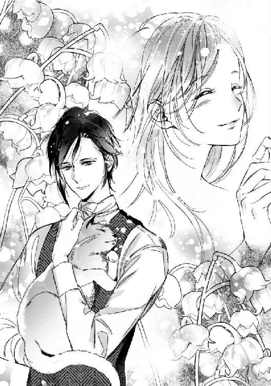
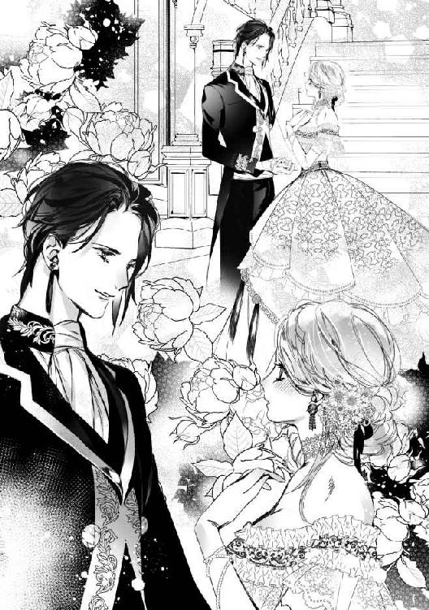
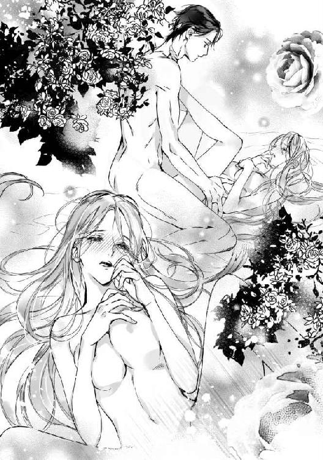

| 幼馴染の青年公爵は猫になった令嬢を甘やかに愛する (LUNA文庫) | |
| 舞 姫美 | |
| 天海社／LUNA文庫 (2018) | |
幼馴染の青年公爵は猫になった令嬢を甘やかに愛する
［著］舞 姫美
［イラスト］蜂 不二子
第一章
アンティカイネン王国では、貴族の子弟が通う大学園がある。義務ではないがこの学園で三年間、貴族の子弟として必要な勉学を様々に学ぶ制度が作られていた。卒業すると成人の儀を迎える年になり、一人前の大人として本格的に扱われるようになるのが風習だった。
「もう、少し......っ！」
指先に背表紙の端が引っかかった。何度か挑戦し続けたおかげで、当初より少し本が飛び出してきている。このまま掴めれば引き抜けるだろう。
ティーナは懸命につま先立ちになりながら手を伸ばし、背表紙を掴もうとした。
今日に限って、踏み台が近くにないことが悔しい。誰かに手助けを頼みたくとも古代魔法分野の書棚にやってくる者はほとんどなく、人の気配さえ近づかないのだ。
確かに今や魔法を行使できる者は天然記念物並みで、国王に保護された五人しかいない。貴重な魔法は国の祭典のときくらいしか見ることができず、どちらかと言えば大がかりな手品のように思う国民たちがほとんどだった。
だから魔力もないのに魔法学を専攻する者はあまり折らず、必然的に資料を集める者も少ない。それでも魔法に興味を持つ者はいるし、魔力はなくとも選択授業で選ぶ自分のような者だっている。
だからこの分野の棚の近くにも、踏み台は在るべきなのだ！
「う、うーん......！」
自分に魔力があれば、こんな苦難は一瞬で解決するのだろう。だがステンロース伯爵家が魔術師を輩出していたのはおよそ五百年前までで、今はかつての栄光の名残としての秘薬が保管されているだけだ。
代々直系筋の跡継ぎだけがその秘薬の在りかを教えられる。今代のステンロース伯爵家にはティーナしかおらず、この学園を卒業する祝いとして父親から教えられることになっていた。ぼんやりと聞いた話によると、ステンロース家の家紋になっている猫のモチーフにちなんだ秘薬だというのだが。
（その秘薬も本当なのかどうか怪しいし......あ、やったわ......！）
背表紙を確かに掴める感触がして、ティーナは勢いよく引き抜く。直後、他の本もまるで糸で繋がっていたかのように、一段分の書物がティーナ目がけて襲いかかってきた。
「きゃ......っ」
とても避けられる状況ではなく、固い上製本が何冊も降ってくる痛みを覚悟し、ティーナはキツく目を閉じて身を強張らせる。
（あ......ら......？）
バザバサと本が落ちてくる音が続く中、しかし、覚悟していた痛みはなかった。どういうことだと恐る恐る目を開くと、最後の一冊を頭に受けた人物が小さく声を上げる。
「あたた......」
聞き覚えのありすぎる深みのある声にハッと見上げれば、ティーナの背後から両腕を伸ばして本棚につき、こちらに覆いかぶさっている黒髪の少年の姿があった。自分をすっぽりと包み込むように庇ってくれている少年の姿を認めて、ティーナは危うく声にならない悲鳴を上げそうになる。
（サイアス！）
――サイアス・キヴィレフト。このアンティカイネン王国の中で五本の指に入る高位貴族だ。
公爵家子息なのに、わざわざ家庭教師ではなく、この学園で学んでいる。身分を鼻にかけず、先入観を持たずに他人と触れ合ってくれる気安さと懐の深さから、男女や身分差に関係なく、人気が高い。
勉学の才は常に学年一位を取り続け、品行もよく教師陣たちにも一目置かれている。そこに彼の身分の高さはもちろん関わっているだろうが、純粋にサイアスの優秀さを彼らは誉めていた。ティーナにとっては、自慢の幼馴染みだ。
ティーナの両親とサイアスの両親がかつてこの学園で友情を育み、それが今も続いていることから、幼馴染みとして昔はよく一緒に遊んだ仲だった。だが年頃になるとどうにも一緒にいることが気恥ずかしくなると同時に、サイアスを異性として意識してしまって、ティーナの方が距離を取るようになってしまっていた。
だがサイアスはティーナのことを変わらずに幼馴染みとして――いや、妹のように気にかけてくれている。
「大丈夫か、ティーナ。怪我はないか？」
「わ、私は大丈夫！ サイアスは怪我してない!?」
ハッと我に返り、ティーナはサイアスの負傷を確認するために腕や肩や胸元を触る。学園指定の制服越しでもサイアスの身体が鍛えられていることがわかり、ティーナはドキリとした。
最近のサイアスは、ますます男らしくなっている。ティーナの同性の友人たちも、サイアスのことが気になっている者が何人もいた。
サイアスは一瞬驚いたように軽く目を見張ったあと、深いため息を吐きながらティーナの手首をそっと掴み、自分から離す。
「大丈夫だ。どこも怪我はしていない」
「ごめんなさい。庇ってくれてありがとう」
サイアスの手の大きさと温かさに急に胸がドキドキしてしまい、ティーナは慌てて両手を引っ込める。サイアスは何か言いたげにティーナを見返したが、すぐに厳しい口調で続けた。
「ティーナ、明らかに届かない位置にある本が欲しいなら、踏み台を使えばいいだろう。なんでこんな無謀なことをするんだ。怪我をしてからでは遅いんだぞ。女性なのに、どこかに傷を作ったりしてそれが残ったら、どうするんだ」
サイアスの優しい言葉は嬉しかったが、たかが本が落ちてきたくらいでする怪我への心配としては、大げさすぎる。心配しすぎだと少しふくれっ面になりながら、ティーナは言い返した。
「近くになかったの」
「だったら誰かを呼べ。横着をするからこういう惨事になるんだ」
窘めながらサイアスは膝をつき、落ちた本を拾い始める。
「この分野に来る人なんて滅多にいないもの。自分でなんとかするしかないと思って......サイアスはどうしてここに来たの？ 探し物？ サイアスが魔法学を専攻していたなんて、聞いたことがないけど......」
ティーナもすぐに膝をつき、本へと手を伸ばす。だがサイアスが口にしたのは、関係ないことだった。
「......制服が汚れるぞ」
「自分でやったことの後始末は、自分でしなくちゃ。サイアスこそ、制服が汚れてしまうわ」
サイアスはそれには答えず、無言で本を拾い続けた。
ある程度手に溜まると立ち上がり、棚に入れていく。ティーナも同じようにしたいのだが手が届かないため、困ってしまう。
「渡してくれ」
「ありがとう！」
拾った本をサイアスに渡して、棚に入れてもらう。二人で連携をとれば、あっという間に片付いた。
もう一度礼を言うと、サイアスは小さく笑い返した。仕方なさそうな、けれども温かみが感じられる優しい笑みだ。
「本当にティーナは、いつまで経っても目が離せないな」
言いながらサイアスはティーナの頭に手を伸ばし、ぽんぽんとあやすように叩く。一歳年上なだけなのに、妹扱いどころか子供扱いだ。
年頃になったことと男女の体格差がサイアスにそうさせるのかもしれないが、今はそれが何だかとても腹立たしく、苛つく。
ティーナはむうっ、と唇を尖らせるようにして、サイアスを睨みつけた。上目遣いになってしまうのは、身長差ゆえに仕方のないことだ。
サイアスはティーナのこの表情を見るといつも、うっ、と息を詰まらせるような顔になる。きっととても可愛くない表情になってしまっているのだろうが、自分がサイアスの対応に不満を持っていることは伝えたい。
「ねえ、サイアス。サイアスが面倒見がいいことはよく知っているわ。幼馴染みのよしみで私のことを気にかけてくれていることも感謝してる。でも、私だってもう子供ではないのよ。あともう少ししたら成人して、ステンロース伯爵家の跡継ぎに相応しい人を迎えるために結婚するようにだってなるのよ。もっと私を、ちゃんとレディ扱いして欲しいものだわ！」
人差し指を突きつけ、ティーナは自分が出せる一番怖い声でサイアスを窘める。サイアスは今初めてそのことを知ったかのような驚きの表情になり、ティーナをじっと見つめ返した。
「......そうか......そうだな。ティーナも、もうそういう年頃なんだよな......」
「......サイアス......私が何歳なのか、忘れているとでも？ 毎年、ちゃんと誕生日プレゼントを贈ってくれるのに？」
「いや、すまない。俺にとってティーナは、いつまでも目が離せない妹みたいな存在だから」
（......何よ、それ......！）
その言葉が、余計にティーナの苛立ちを強める。これはじっくりと説教しなければならないと改めて目を向けるが、サイアスがじっとこちらを見つめているせいで反論の機会を失ってしまった。
透き通った緑の瞳に凝視されて、ティーナはひどく落ち着かない気持ちになる。何を考えているのか表情が読み取れないのに極上のエメラルドのように美しい瞳にそんなに見つけられると、居たたまれない。
耐えきれなくなり、ティーナは思わず俯いた。サイアスと視線が絡まなくなってほっとしたはずなのに、胸のドキドキはなかなか治まらない。
頭の上で、サイアスが苦笑した。
「とりあえず、俺にそんな主張をしてくるようでは、まだまだティーナは子供さ」
どこか恨めしげにも聞こえる言葉に、今度は悲しい気持ちになるティーナだった。
※ ※ ※
（――思い返して見ると、あの頃にはもう、私はサイアスに恋をしていたんだと思うわ。だから子供扱いとか妹扱いされることが腹立たしかったのよ）
現実逃避のために違うことを考えようとしていた思考は、懐かしい思い出を呼び起こしてくれる。
学園を卒業したのは去年で、学園在学中に両親を不慮の事故で亡くしてしまったティーナは、夫を迎えると同時にステンロース伯爵位を継ぐことになっている。現在のステンロース伯爵位は国王に預かってもらっている状態だ。ティーナが伯爵位を継ぐまでは、家族のように深い交流があった父の友人でありサイアスの父親であるギヴィレフト侯爵と叔父のマルクスがティーナの後見人になってくれていた。
一人娘であるティーナが伯爵位を継いだとしても、ギヴィレフト侯爵には一生助言を求めることになるくらい信頼している。他家で婿としてステンロース一族を出たマルクスも同じように侯爵を信頼していた。ティーナにとって、侯爵はもう一人の父親のような存在だった。
侯爵も侯爵夫人も、両親が亡くなる前からティーナを実の娘のように可愛がってくれている。だからサイアスが自分を妹のように思ったとしても、仕方がないのだ。
一足先に学園を卒業したサイアスは、ギヴィレフト侯爵子息として本格的に社交界に出ることになり、跡継ぎとしてそれなりに多忙な日々を過ごしているらしい。昔のように気軽に会うことはなくなった上、ティーナも積極的にサイアスに会うようにはならなくなった。同時に、サイアスからも距離を置かれてしまっているように思える。
それでも時折様子を見に来てくれるし、こちらが侯爵家を訪れるときはいつも屋敷に居てくれて困ったことはないかと気を遣ってくれる。優しくて頼りがいのあるサイアスにそうやって気にかけてもらえることは、とても嬉しい。
だがその気持ちが家族愛によるものだとわかるから、ため息を吐いてしまう。
（サイアスの馬鹿......）
思わず心の中で呟いてしまったが、これでは単なる八つ当たりだと気づいて自己嫌悪に陥る。こういうところがサイアスにまだまだ子供だと嘆息されてしまうのだろう。それに、異性ならば誰もが一度は恋人になりたいと思うような容姿端麗で身分も高いサイアスに妹扱いが嫌などという不満は、ひどく贅沢な悩みなのだろう。
昔の思い出に意識を向けていると、思考が果てしなく後ろ向きになりそうだ。ティーナはせっかくのパーティーなのだからと、改めて友人たちとの会話に意識を向け直した。
誘ってくれたのは、学園時代から仲がいい友人たちだ。乗り気ではなかったのだが、このパーティーを理由にマルクスの来訪を断ることができたのは嬉しい。ティーナの様子を見るという理由でステンロース家にやってくるマルクスは、しかしながら今、ティーナの将来を慮って早く結婚した方がいいと、見合い話を持ってくるのだ。
マルクスはティーナに立派な夫を迎えて早く安心したいようで、よくもまあここまで求婚者がいるものだと感心してしまうほどに次々と見合い用の肖像画を持ってくる。自分と結婚すれば自動的にステンロース伯爵になれることが最大の魅力なのだろう。求婚者の中には名前しか知らない者もいて、本当に自分に愛情を抱いているのかどうかを疑ってしまう。
貴族の令嬢として政略結婚も必要ならば仕方ないとは思うが、今の自分にそれは必要ない。ならば、少しは愛情が欲しいと思ってしまうのは、いけないことだろうか。
マルクスの気遣いは嬉しいが、辟易しているのも正直な気持ちだ。その精神的苦痛を心配して、息抜きにこのパーティーに誘ってくれたのだ。
友人の一人が主催者となっているお陰で、ステンロース伯爵の地位を狙ってやたらに声をかけてくる者もいない。とはいえ、同世代の者たちが招待されている以上、興味津々な視線までは完全に排除できはしなかった。
年配の口うるさい紳士淑女たちがいないおかげで、パーティーは気安い空気に満たされている。ティーナは仲のいい女友だちとソファセットの一画を陣取り、他愛もない話を交わしていた。
「そういえば、知ってる？ アマンダ、オスティ男爵との婚約が進んでいるんですって」
自然と恋の話になるのは、年頃だからだろう。この中ではまだ結婚している者はいない。
「まあ、喜ばしいことね！ 羨ましいわ」
「二人が出会ったのって、アマンダのご両親とオスティ男爵との間に仕事のやり取りがあって、それをきっかけに......だったわよね？」
「そうそう。それから観劇とか食事に誘って頂いたって言ってたわ。アマンダは恋愛結婚になるのよ」
「恋愛結婚......いいわよねぇ！」
それぞれの身分のある令嬢たちで、結婚が夢見るようなものばかりではないことを承知しているが、やはり年頃の娘として希望を捨てることはできないのだろう。友人たちの会話は可愛らしい夢見る乙女そのものの話題へと変わっていくが、結婚相手をかなり真剣に探されているティーナとしては、何とも言えない複雑な気持ちになる話題だ。
願わくば自分のことに話が振られないようにと思うのだが、それも難しかった。
「......ねえ......その......ティーナの方はあれからどうなっているの？」
（......や、やっぱりこの話題が来てしまったわ......）
ティーナに気を遣ってくれて、なるべくこの手の話題を上げないように試みてくれていたようだったが、乙女の好奇心から逃れ続けることは難しい。ティーナも充分にそれがわかっているため、むしろこのときまで話題にしないようにしてくれたことを感謝しつつ、少々引き攣った笑みを浮かべた。
「......あ、あれからっていうのは......どのときのことを言っているのかしら？」
「叔父さまがティーナの結婚相手を一生懸命に探してくださっているのでしょう？ でもティーナはまだどなたも決めていないじゃない？」
「え......ええ、そうね。まだ......決めていないわ」
「――それって、ティーナに好きな人がいるからではないの？」
周囲のことを気遣って、友人たちは潜めた声で問いかけてくる。ティーナは危うくもう少しで、羞恥のあまり奇妙な悲鳴を上げそうになってしまった。
（やっぱりそうなるのかしら!? むしろそこは傲慢に男を選んだりしてってことにはならないのかしら!?）
「だって......ねえ？ 家のことを考えればそれなりの身分の相手を叔父さまは選ばれるだろうし......それなのにティーナが未だに結婚相手を決めないのって、そうとしか考えられないものね？」
友人たちはティーナの答えを待ち望むかのように、一斉にこちらを見つめてくる。圧迫感をひどく覚える無言の視線に、ティーナはどう答えればいいのかわからず、黙り込んだ。
（だって......やっぱり好きな人は......いる、から......）
サイアスの姿を思い出し、ティーナは自然と耳まで赤くなってしまう。その反応に、友人たちがますます色めき立った。
「やっぱりいるのね、ティーナ！」
「だから相手を決められないのね!? もう、水くさいわ。それだったら私たちが協力するわ！」
「いえ......あの、それは......」
友人たちの気持ちは嬉しいが、ここでサイアスの名など口にできるわけがない。ティーナが何とかこの場を誤魔化す言葉を探し始めたとき、後ろからそっと低い声が投げ込まれた。
「――ティーナ、ここにいたのか」
予想外のサイアスの声にドキリとして、ティーナは慌てて振り返る。黒い盛装姿のサイアスがそこに佇んでいた。
数週間ぶりに会うサイアスだが、相変わらず容姿端麗だ。会場内の異性の視線のほとんどが、サイアスに向けられている。
会うたびに大人びていくサイアスの姿に、ティーナも一瞬見惚れた。だが、すぐに主催者の友人を見返し、言葉にせずに問いかける。
（――サイアスもこのパーティーに招待していたの!?）
ティーナの言いたいことを察し取ってくれた友人が、ぶんぶんと首を振った。
（じゃあどうして......）
「ご、ごきげんよう、サイアス殿。ど、どうしてあなたがこちらに......？」
ティーナの腕をサイアスが後ろから掴んで立たせる。
「友人に一緒に行かないかと誘われたんだ。そうしたら、君の姿を見かけた」
「......そ、そうだったの......」
「気安いパーティーだとはいっても、あまり遅い時間までいるのは良くないぞ。君は未婚の令嬢なんだから」
口うるさい兄のようにサイアスは言ってくる。自分と年齢的には一つしか差がないのに、相変わらずサイアスは自分を妹のように――いや、目の離せない子供扱いだ。そのことに学園時代と変わらず、怒りのような感覚を覚えてしまう。
（ああ、でも、怒っては駄目よ。サイアスは私のことを心配してくれているだけなんだから）
「帰りは送ろう」
「......い、いいわよ、大丈夫よ。迎えの馬車を呼べばいいだけだし......」
「俺が心配だから、送らせてくれ」
ティーナの友人たちが、サイアスの言葉に声にならない悲鳴を上げつつ頬を赤くする。確かに今の言葉だけを耳にするのならば、ティーナのことをとても大切にしていると思っても仕方がない。
（でも違うわ。サイアスが私のことを心配してくれるのは、小さい頃から家族同然で......妹みたいに可愛がってくれていたからで......）
わかっていることを改めて心に思うと、チクチクとした痛みがやってくる。サイアスが俯き加減になったティーナの様子を見て、心配そうに続けた。
「ティーナ。疲れたんじゃないのか」
「いいえ、大丈夫よ。心配してくれてありがとう、サイアス」
「君のことは昔から亡きステンロース伯爵夫妻にも頼むとよく言われている。気にすることはない」
サイアスは何でもないことのようにそう言ってくれるが、ティーナにとってはあまり嬉しいことではなかった。結局のところ、サイアスにとって自分はいつまで経っても家族の域から出ることができないのだ。
「......人いきれで疲れてしまったのかもしれないわね。ティーナ、少し庭を歩いてきたらどう？」
ティーナの思い煩う表情を気遣ってくれて、友人たちがそう提案する。ならばそれを理由にしてもう自邸に戻ってしまおうかと思ったが、まるで遮るように別の友人が続けた。
「サイアス殿。ティーナに付き添ってくださいませんか？」
「ああ、構わない」
当然のように頷いて、サイアスがティーナの手を取る。一人前のレディとしての仕草ではあったが、家族としての親愛感があふれているから心地よくも身勝手な苛立たしさも覚えてしまう。
サイアスに導かれて、ティーナは屋敷の外に出た。喧噪が遠のく分、互いの沈黙が際立って何だか居たたまれない。
時折こういうふうに偶然、社交の場で会うときや、ギヴィレフト侯爵夫妻に呼ばれたときなどに会うくらいの頻度になっていると、こうして二人きりになるとどういう話をすればいいのかわからなくなってしまう。しかもサイアスを異性として意識しているから、余計に他愛もない話というものがどんなものだったのかもわからなくなりそうだ。
（ドキドキしているのは私ばっかり。何だかずるいわ）
「少し顔が赤いぞ、ティーナ。もしかして酒を飲んだのか？ 君は酒にとても弱い体質だろう。うっかり口にしたりしたら......」
「......飲んでないわ......」
心配してくれていることがわかるのに、お小言を食らっているようにしか思えなくてむうっと眉根を寄せてしまう。
ティーナの体調を気遣ってくれているのか、サイアスの歩はゆっくりとしている。相変わらず、ティーナの手を先導するように取ったままだ。ティーナは指先でその掌に触れるだけに留めている。
しばらく無言で歩いていると、ティーナの手をサイアスが柔らかく握りしめてきた。優しい温もりを感じて、ティーナの鼓動が震える。
「......手......っ」
思わずティーナが小さく声を上げると、サイアスが握りしめた手を緩めてくれる。だが離すことはしないため、ティーナは何とも言えない恥ずかしさで身を震わせた。
「......も、もう離して」
「駄目だ。ここで君の手を離したら、誰に目をつけられるかわからない」
「......目を付けられるって......？」
ティーナが小さく小首を傾げながら問いかけると、サイアスが軽く目を見張って大きくため息をついた。どこか呆れたように額を指先で押さえながら、サイアスは小さく首を振る。
「純粋培養なのにもほどがある......」
「待って、サイアス。どうしてそこで私が純粋培養となるの。私、箱入り娘ではないわよ？」
両親が亡くなってからは、マルクスの後見を受けながらもステンロース伯爵家の運営についての教えを受けているのだ。そのために、ギヴィレフト侯爵も協力してくれている。
「私は純粋培養な令嬢じゃないわ」
「そう思ってるのは君だけだ、ティーナ。こんな夜の庭園で君と手を離して、そのあと隙を見て他の男が声をかけない保証はなだろう。君が求婚中で、まだ相手を決めていないということをもう少し自覚した方がいい」
つまり今夜はもうティーナに余計な男が声をかけないようにしてくれている、ということか。
「......ありが......」
「そういうところがいつまでたっても目が離せないんだ、ティーナは」
（......ああ、ほら、また......）
口癖のように言われるその言葉を、ティーナは苦く噛みしめる
幼い頃はいつでもサイアスが傍にいてくれる約束をしてくれているように思えたが、彼を家族と同じ目ではもう見られなくなったティーナには、もう喜べる言葉ではない。子供扱いされ、妹扱いされ、家族扱いされる――それは恋する側としてはとても贅沢な悩みなのかもしれないが。
「ティーナ、ほら」
サイアスがティーナの手を引いて、ふと足を止める。思案に落ちていたティーナの反応は少し遅れ、呼ばれて慌てて顔を上げた。
「何？」
「この庭、鈴蘭もある」
それは、ティーナの好きな花の一つだ。清楚で小さな鈴が連なっている花は、可愛くて好きだった。
サイアスが視線で促した先に、確かに鈴蘭が植えられている。今は月光を受けて白い色味が強くなっていた。同時に少し輝いているようにも見えて、ティーナの暗く沈んでしまいそうになる気持ちを浮上させてくれるようだ。
ドレスのスカートの裾が汚れないように気をつけながら、ティーナは身を屈める。
「可愛い」
「君はその花、好きだな」
「ええ。可愛いもの。そう思わない？」
（鈴蘭は、可愛いから好き。だから......サイアスがくれた卒業のお祝いのブローチも、好き）
大切に大事にしているもののだ。それをサイアスに教えるつもりはない、が。
サイアスがティーナの隣で身を屈め、同じ鈴蘭を覗き込む。ふわ......っ、とサイアスが纏う爽やかなフレグランスの香りが鼻先を擽ってきて、ティーナは小さく息を呑んだ。
（サイアスが......近い）
同時に、ティーナの隣でサイアスも小さく息を呑んだのがわかった。
二人そろってまるで引き寄せられるように互いを見返してしまい、互いの距離が近いことに改めて息を呑んでしまう。あと少し近づいたら、くちづけも可能なほどの近さだ。
（離れなくちゃ......）
そう思うのだが、吸い寄せられるようにサイアスの瞳を見返すことしかできない。月光を受けて、サイアスの緑の瞳はいつもよりも透明度を増していて綺麗だ。
サイアスの片手が、ティーナの頬に触れる。指先が頬の柔らかさにそっと触れた直後、ティーナたちの耳にこちらに近づいてくる足音が届いた。
「......っ！」
サイアスがティーナを抱き寄せ、生け垣の陰に身を潜める。別に隠れる必要はなかったのだが、何となく二人きりでいるところを見られるのはまずいような気がして、ティーナは抵抗することなくサイアスに身を委ねた。
サイアスはティーナの口を片手で塞いだまま生け垣の陰に座り込み、開いた膝の間にティーナの身体を抱き寄せる。
背中にサイアスの逞しい身体を感じて、ティーナの胸がドキドキした。だがサイアスが触れている感触がとても心地いい。
近づいてきた足音は、招待客の中にいた恋人のものだったようだ。他愛もないがお互いを思い合う優しい会話を交わしながら、ティーナたちの傍を気づかずに通り過ぎていく。
足音が完全に聞こえなくなるのを待って、サイアスがようやくティーナの口を塞ぐ手を離してくれた。ティーナを後ろから抱き締めている格好になっていることに今更のように気づいたらしく、サイアスが慌てて両手を上に上げる。
「す、すまない！ つい夢中で......!!」
「......だ、大丈夫......っ。わ、私も......何か、見られるの......嫌、だったから......っ」
「......そう、か......」
ティーナの言葉に、サイアスが少し気落ちした様子で言った。どうかしたのかと問いかけようとすると、サイアスが改めてティーナの身体を背後から抱き締めてくる。
「......サ、サ、サイアス......っ？」
「......すまない。少しだけ」
「......と、年頃の男女がすることじゃ、ないわ......っ」
サイアスの体温はとても心地いいが、やはり恥じらいはある。そう言い返すと、サイアスはため息を吐きながら頭上にふわりと顎先を乗せてきた。
（この体勢......小さな頃に、よくしたわ......）
「確かに俺たちは年頃だが......ティーナはまだまだ俺の妹みたいなものだ。昔はよくこうやって、くっついていただろう？」
「ええ、そうね。兄は妹に変な気は起こさないものね」
（......何よ......）
サイアスの頬をはたいてやりたいが、それでは単なる八つ当たりだ。サイアスは今以上にはティーナに触れないようにしながらも続ける。
「......結婚相手、決めたのか？」
ドキン、と胸が震えた。今、どんな顔をして問いかけたのかが見たいが、それを知るのも怖い。
「......まだ......」
「求婚相手のことに関しては、ちゃんと父上や母上にも相談してくれ。とにかく、君一人で選ぶのだけは止めて欲しい。変な相手に捕まったりしたら大変だ」
「......変な相手って何よ......」
「君は、男を知らないからな」
妙に生々しいことを口にされて、ティーナは身を強張らせる。密着している分、サイアスにもその様子が伝わった。
サイアスが、慌てた。
「あ......いや、その......変な意味で取らないでくれ。あまり男に慣れていないということで......」
いつになく慌てた様子でしどろもどろに続けたサイアスだったが、やがては観念したように嘆息する。
「いや......ただ、君が心配なんだ」
本当に心配してくれている深い声音でそう言われると、ティーナは何も言えなくなってしまう。
「心配してくれてありがとう、サイアス。相手を決めたら、ちゃんとサイアスにも報告するわ。私が間違っていないかどうか、サイアスも確認してくれる？」
「......それは......もちろん......」
頭上から落ちてくるサイアスの声は、どこか沈んでいるようにも聞こえた。サイアスはティーナを後ろから抱き締める腕に、ほんの少し、力を込めた。
「なあ、ティーナ。もし、俺が君に......」
あまりよく聞こえず、ティーナはサイアスが何を言おうとしているのかを知りたくなり、そっと背後を振り返る。だがあまりにも近すぎる距離だったことを忘れていたため、ティーナの唇が、こちらを見下ろしていたサイアスの唇に柔らかく押しつけられてしまった。
（え......）
いったい何が起こったのかわからず、ティーナは驚きに大きく目を見張って身を強張らせた。サイアスはティーナよりも緑の瞳を大きく見開き、息を呑んだまま動かない。
不可抗力とはいえ自分から唇を奪ってしまったことに、ティーナはすぐに耳まで赤くなる。
「ご、ごめんなさい！ い、今のは......そ、の......事故ということにして......!!」
「......あ、ああ、そうだな！ 合意でないキスは、事故だ！」
「ええ、そうよ!!」
月光を逆光にしているため、サイアスの表情ははっきりと見て取れるわけではなかったが、少し顔を赤くしているように見える。
ティーナはドキドキしながら慌てて立ち上がろうとした。こんなふうに密着しているから、こんな事故が起こってしまうのだ。
「散歩に戻りましょう、サイアス」
「あ、ああ」
頷いたサイアスが素早く立ち上がり、ティーナの腕を掴んで引き上げてくれる。ティーナの重みなどまるで感じないように力強い腕に、また胸がドキンとしてしまって困った。
「......ティーナ......その......すまなかった。さっきのキス......嫌じゃなかったか......？」
どこか不安そうにサイアスが問いかけてくる。軽く触れただけとはいえ、くちづけてしまったことを思い返し、ティーナは真っ赤になりながらも答えた。
「い、嫌じゃ......なかったわ」
「......そ、そうか......」
サイアスが安心したように――どこか嬉しそうに頷く。そして気を取り直すようにティーナの手を取ると、改めて庭園を歩き始めた。
先ほどの不意のくちづけでドキドキしてしまい、再び何を話せばいいのかもわからなくなる。子供の頃は、挨拶のキスを気軽に違いの頬にしていたのに――唇のキスは、初めてだった。
（私は初めてだけど......サイアスはどうなのかしら......？）
ティーナが知る限り、サイアスから女性関連の噂は聞いたこともない。ギヴィレフト侯爵夫人も、時折一緒に茶をしたときなどにサイアスが女性に興味を持っていないようで困るわ、などとぼやいていたくらいだ。
サイアスは真面目な性格をしているから、異性に対して浮ついた気持ちで触れることなどないのだろう。
（好きな人とか......いない、のかしら......）
「どうかしたか、ティーナ？」
思わずじっとサイアスの横顔を見続けてしまっていたらしく、視線に気づいて声をかけられてしまう。
ティーナは慌てて首を振ろうとし――だがせっかく聞きたいと思ったのだからと、思い切って聞いてみることにする。次に会ったときに同じ質問ができるかどうか、自信はなかったから余計だ。
「サ、サイアスには......好きな人とかはいないのかしらと思って」
「......何で、そんなことを聞くんだ？」
サイアスの声が、硬くなる。聞いてはいけないことを聞いてしまったのだろうかとティーナは不安になり、慌てて続けた。
「サイアスはギヴィレフト侯爵家の跡継ぎでしょう？ そろそろ婚約者くらいは見つけてもおかしくない年頃だし......サイアスから女性の噂を聞いたことが一度もないなって思ったから」
「俺は器用な男じゃないからな。その場限りの恋とかいうやつはできないんだ」
「今、好きな人はいないの......？」
どんな答えが返ってくるのか、息を詰めるようにして待ってしまう。だがそんな決死の表情をサイアスに見られないよう、ティーナは俯き加減になった。
数瞬の沈黙のあと、サイアスは深く嘆息してから答えた。
「悪いがそれに関しては、いくらティーナでも気安く教えられない」
「......そう......」
何だか突き放されたような気がして、ティーナは急に寂しくなる。自分のことを妹のように家族のように扱ってくれていても、大事な部分には容易に触れさせてくれないということか。
ティーナは気を取り直して笑いかけた。
「ごめんなさい。変なことを聞いてしまって」
「いや......」
サイアスもいつものように優しく微笑んで首を振った。
サイアスはそれからティーナと一緒にパーティー会場に戻ったものの、先ほどのティーナの顔色が悪かったことを理由にして、自分の馬車に乗せて帰宅させてしまった。サイアスも一緒に馬車に乗ってきたため、ティーナは気まずくなってしまう。
「サイアスは残っていなくていいの？」
「構わない。目的は終わった」
「......目的......？」
いったい何の目的で今夜のパーティーに参加したのかと不思議がって目を向けると、サイアスはしまったというように片手で口を押さえて横を向いてしまう。
「......いや、何でもない」
「変なサイアス」
ため息混じりにそう言うと、サイアスは伏し目がちに苦笑した。
「そうだな。君に関しては、俺は変な奴になるのかもしれない」
よくわからず、ティーナは諦めて走り出した馬車に身を委ねた。
※ ※ ※
「......はあ......」
「――私の話を聞いていたのかね、ティーナ？」
深いため息を吐いた直後、怒りを含んで少し震えている男の声が耳に入る。ティーナはハッと我に返り、慌てて令嬢らしくふんわりと柔らかな笑顔を浮かべた。
「もちろん、聞いていましたわ、叔父さま」
――ステンロース伯爵邸の応接間で、目の前には叔父のマルクスが座している。二人の間に在るテーブルの上には、使用人たちが用意してくれた茶と菓子の他に、マルクスが持ってきた見合い用の肖像画があった。
昼食を終えて一息ついた頃合いで、マルクスはステンロース家を訪問してきたのだ。
「ティーナ、このステンロース家のためにも、お前は早く夫を迎えてこの家を盛り立てていかなければならない責務がある。わかるな？」
「ええ、わかっています、叔父さま」
いつまでもギヴィレフト侯爵の庇護を受け続けるわけにもいかない。自分には伯爵家の令嬢としてこの家を次代に繋ぐ責務がある。それが、身分在る者として生まれた者の義務だ。
（ちゃんとわかっているわ。でも......思った以上に堪えるものなのね......）
好きでもない相手と結婚すること――貴族のほとんどは、自分たちの想いよりも家の存続のために相手を決める。だが両親が恋愛結婚だったからだろうか――自分もできれば想いを通わせた相手と結婚したいと思ってしまう。
「結婚して身を固めれば、私も安心できる」
「......ええ、ありがとうございます......」
他意のないマルクスの気持ちは嬉しいのだが、まったく気が進まないのも正直なところだ。
ティーナが本気で嫌がればマルクスもしばらく手を引いてくれるのだが、気持ちが落ち着いた頃にこうして新たな肖像画を持ってくる。ティーナとしても自分のことを思って言ってくれているのがわかるため、あまりに無下にもできず悩みどころだった。
「とりあえず、肖像画の方は拝見させていただきます。気になる御方がいましたら、叔父さまにご連絡いたしますから......」
「ああ、いい返事を待っているよ」
そのあとは、マルクスもこの話を変に引きずらずに他愛もない世間話でティーナを笑わせてくれる。叔父の気遣いは少々押しつけがましいのだが、嫌いになれないのはこういうところだろう。
午後の茶を一緒にどうかと誘ってみたが妻と出掛ける用があるからとマルクスが帰って行くのを見送り、ティーナは使用人に肖像画を部屋に運ばせ、求婚者たちのプロフィールを確認した。もちろん、打算なくティーナに求婚してくる者もいてくれるようだが、家名からして財産目当てと思われるものはきっちり容赦なく断っておかなければならない。
（サイアスも......婚約者選びとかをしているのかしら......）
サイアスもギヴィレフト侯爵家子息として、結婚適齢期だ。
今のところティーナの耳に彼の女性にまつわる噂は一切入ってきていないが、社交界で年頃の令嬢たちからはいつも注目されている。......かなり胸がもやもやするのは、令嬢たちだけに限らず、既婚の女性たちからも色目を使われたりしているところだ。
先日も、たまたま参加したパーティーでサイアスを誘惑している夫人を見かけた。サイアスは自分がいることに気づいていなかったようだが、かなりきっぱりと誤解なく断っていて、とてもほっとしたものだ。
だが、サイアスも自分と同じように、身分ある子息だ。いずれは相応しい妻を娶るのだろう。
まだ見ぬ未来を想像し、ティーナは胸に痛みを覚える。サイアスに異性としてすら見られてもいないのに、自分が彼の妻になることなど果てしなく遠い夢だ。ティーナは鬱々とした気持ちになりながらも肖像画に目を通し続けて――次の画で驚きに動きを止めた。
それは、サイアスの肖像画だった。
「......え!?」
ドキンッ、と痛いほどに鼓動が高まり、ティーナは肖像画を手にとってまじまじと見つめてしまう。光が当たると深緑にも見える黒髪も、短めに整えられた髪型も、真っ直ぐに相手を見つめる頼りがいのある切れ長の緑の瞳も、背が高く無駄のない筋肉のついたしなやかな身体も、間違いなくサイアスのものだ。
どうして彼の肖像画が見合い用の中に紛れているのだろう。サイアス自身の意思で、この肖像画はここにあるのだろうか。いろいろな状況を考えてみるが想像の域を出ないため、答えにはならない。本人に直接聞けばいいのだろうが、それも気が引けてしまう。
一番可能性が高いと思われるのは、サイアスが見合い話をいくつも持ち込まれても相手をなかなか決めないことを心配してくれているから、というものだ。妹のように思っているティーナを放っておけなくて、だったら自分が面倒を見てやろうとサイアスが考えてもおかしくはない。
それだけサイアスは自分に対してよく面倒を見てくれて、気もかけてくれていた。だがそれでは異性としての愛情ではなく、家族としての愛情だ。いずれサイアスに心から想う相手ができたとき、彼が苦しむことになる。
（サイアスのことだから、それを相手に非がないのに離婚なんてしないだろうし）
サイアスの意図を探るためには、どうしたらいいのだろう。ティーナは肖像画のサイアスの頬をそっと撫でる。
現実味がなく、塗料の感触しかない。あのとき不意に触れてしまったくちづけのように、サイアスの感覚はなかった。
（昔はもっと気兼ねなく触れ合えたのに......）
サイアスを異性として意識してしまってからは、それができなくなった。サイアスの方は変わりなく自分に接してくれていたというのに。
自分のことを家族として放っておけないというのならば、大丈夫だと伝えてあげなければならない。ここまでするとは、相当なものだ。
だがそれは、今抱いている恋心に自ら終止符を打つことでもある。ティーナは再び大きくため息を吐いた――そしてふと、ステンロース家に伝わっている秘薬のことを思い出す。
困ったことがあったときに使ってみるといいと、おとぎ話のように亡き父から教えられた魔法の秘薬だ。何かいい案を思いつくきっかけになるかもしれない。
「失礼します、ティーナさま」
ノックの音がして、使用人がティーナのために茶を用意してくれた。
彼女は見合い用の肖像画を認めると、同情の目を向けてくる。マルクスの意気込みにティーナの気持ちが追いついていないことを理解してくれているからだろう。特に彼女は古くからこの屋敷に勤めてくれていて、ティーナの姉のように接してくれている存在だ。
「ティーナさま、またお見合いですか？ 差し出がましいことかとは思いますが、乗り気でないのでしたら一度きちんとマルクスさまとお話しなさった方が......」
使用人が、ティーナの手元の肖像画に目を留める。持っているそれがサイアスのものだと気づき、ティーナは慌てて肖像画を胸に押しつけて隠した。
幸い間に合ったようで、彼女は少し不思議そうな顔をしながらも特に肖像画について問いかけてくることはない。
「今日は叔父さまのお見合いの話をじっくり考えたいの。部屋にこもるけど、気にしないでね」
「お食事は......」
「今日はもういいわ。とにかく、一人でゆっくり考えたいの。声をかけるまで、放っておいてね」
「畏まりました。ティーナさま、あまり深く思い詰めないでくださいませ」
「ありがとう」
使用人はますます同情の表情になったあと、退室する。とりあえず、秘薬を使用する際の邪魔はこれで入らないだろう。
ティーナは机の引き出しを空け、奥にからくりで隠されているもうひとつの引き出しを引き出す。小さな空間には、金色の一本の鍵が鎮座していた。
直系の跡継ぎにだけ代々伝わってきている鍵は、秘薬の箱を開けるものだ。自分の力ではどうしようもない困ったことが起きたら秘薬の力を借りるといいと、ティーナは幼い頃から跡継ぎとして両親から聞かされていた。
だがもう何代も秘薬を使用した者はなく、それがどんな効果をもたらすのかはティーナも知らない。
魔術もほとんど廃れてしまっている昨今、おまじない程度のものだとしかティーナは思っていなかったが、停滞する思考の解決の糸口になればそれでいい。そう思いながら鍵を取り出し、ティーナは亡き父の書斎へと向かった。
鍵と同じく引き継いだのは、この部屋の本棚のからくりで開かれる隠し部屋だ。父親に一度だけ開き方を聞いている。
一人で開けることにドキドキしながらも教えられた通りに本棚に入っている所定の本の位置を変え、隠し扉を開ける。窓のない小さな部屋が本棚の奥に現れ、ティーナは作り付けの棚の中に置かれている木箱を手に取った。
何の飾りもない簡素な木箱に開けると、中には硝子製の小瓶が入っていた。小瓶の中には、無色透明の液体が半分ほど入っていた。
（これが秘薬......？）
木箱の中には紙片も入っている。古い紙で、少し黄ばみがあった。どうやら秘薬の使用方法らしい。
『使用量はひと雫。口に含めばステンロースの象徴に変化できる。効果は一日。我が子孫よ、有効に使いたまえ』
先祖である魔法使いの誰かが記したものなのだろう。うさんくささを感じてティーナは瞳を細める。
だが、秘薬はちゃんと減っている。過去に直系の先祖が使ってきたということだ。
ティーナは意を決し、紙片の通りに指先にひと雫を乗せ、それを舐めた。
甘い。一瞬気分が悪くなりそうなほどの濃厚な甘さが口の中に広がったあと、全身がふわふわとした酩酊感覚に包まれる。
（な、に......これ......？）
目眩がして立っていられなくなりそうで、ティーナはその場に座り込んだ。目を閉じて気持ちを落ち着かせようとするが、酩酊感覚は治まるどころかますますひどくなっていく。
（やだ......何、これ......）
『まったく君はどうしてそう無鉄砲なことばかりするんだ。だから俺がいつも目が離せないと言ってしまうんだ』――ここにはいないサイアスの小言が聞こえてきそうだ。
そう言いながらもサイアスは、いつもティーナが最悪の状態にならないように気を配ってくれていた。幼い頃は今よりもお転婆で、サイアスと同じことをしたがった時期は特にそうだった。
瞼の裏で思い出したサイアスの姿に、ティーナは思わず言う。
「サイアス......助けて......」
思わずそう呟いた直後、ティーナの意識はぷつりと途切れた。
第二章
――夢の中で、自分は猫になっていた。
ステンロース家の家紋は猫だ。ステンロースの始まりの魔法使いが使い魔として猫を使役していて、その猫が大変有能だったことから家紋としたらしい。
猫は人では到底無理なこともできる。視界は低くなって慣れないところもあったが、少し道を歩き、壁に飛び乗り、木登りをしたら、あっという間に慣れた。
沈んでいく太陽を横目に、時折往来を行く人々の足の間をすり抜け、自分を見つけた子供たちが「珍しい毛並みの猫だ！」とはしゃぐ声ににゃあと返事をしてやって、連れの大人がこちらに目を向ける前に近くの家の屋根まで飛び上がって、一気に走っていく。
走る速さも人のときとはまったく違う。この姿ならば、太陽が沈む前にギヴィレフト侯爵家に着くことができる。
（ほら、もう目の前！）
格子門の間をすり抜け、庭園を駆け抜ける。幼い頃は互いの家を行き来していたから、サイアスの部屋がどこなのかは知っている。
玄関ホールを走り抜けると、使用人が驚きの声を上げた。
「何、今の！」
「猫よ、猫！」
「やだ、捕まえて！ 野良猫なんてお屋敷の中に入れてはいけないわ!!」
使用人たちが侵入者を捕まえようと躍起になるが、ティーナの身体は身軽に螺旋階段の手すりを昇っていき、サイアスの部屋を一目散に目指していく。
捕まえられないことに彼ちが文句を口にするのが聞こえてきたが、ティーナは構わない。どうせ夢の中のことだ。
（その割には随分現実感があるけど......）
目的の扉を見つけ、ティーナはその前で立ち止まる。だが、猫の姿ではドアノブを掴むこともできない。
だが、猫になっているおかげか、扉越しに室内の人の気配は感じ取れる。
扉を開けるためにドアノブにぶら下がり、自分の重みでノブを下ろして開けるのはどうだろう。名案のように思え、ティーナは助走のために壁まで後ずさった。
そして狙いを定めてドアノブに飛びつくために一気に走り出したところで、目的の扉が予告なく開いた。
「何だか騒がしいな。いったいどうし......ふぐっ!!」
「......にゃあっ!!」
室内から姿を見せた長身の青年の腹部に顔面から突っ込んでしまい、ティーナは痛みに軽く気が遠くなる。腹部に激突された方もそれなりに痛みがあったらしく呻くような声を出したが、素晴らしい反射神経でティーナの身体を受け止めてくれた。
痛みと衝撃、そして温かい腕の温もりを実感して、ティーナは慌てて意識を引き戻す。夢の中だと思っていたが、この実感は夢では片付けられないほど現実的だ。
（夢......じゃ、ない......っ!!）
秘薬を飲んだことを思い出し、ティーナは慌てて捕らわれた腕の中から逃げ出そうとする。ティーナを抱きかかえた青年は突然暴れ出したことに驚いたものの、すぐに安心させるためか背中を撫でてきた。
「よしよし......大丈夫だ。痛かったか？ すまなかった」
蕩けるほどに優しい声音は、サイアスのものだ。ティーナは驚いて動きを止め、声を見上げる。
「よしよし」
もう片方の手が今度は頭を撫で、耳裏の根本辺りを指先で優しく撫でてくる。それが信じられないほど気持ちよくて、ティーナは思わずうっとりと目を細めながらサイアスの胸にもたれかかった。
「にゃー......」
（何これ......すごく気持ちいい......）

ごろごろと喉を鳴らすティーナを、サイアスは優しく撫で続ける。そうしているうちにティーナを追いかけてきた使用人たちが追いついた。
「サイアスさま！ 申し訳ございません!!」
サイアスは片腕にティーナを抱えたままで、首を振る。
「いや、大丈夫だ。この猫はどうしたんだ？ 白銀の毛並みなんて、随分と珍しい毛色だな......」
「お屋敷の中に迷い込んできたみたいです。申し訳ありませんでした。外に出しておきますので」
（えっ、私、追い出されてしまうの!?）
秘薬を飲んでせっかくここまで来たのに、何の成果も上げられずに追い出されるのは嫌だ。ティーナは毛を逆立てながらサイアスの肩に飛び乗り、唸る。
「なっ、なんて凶暴な猫ですかね！ さっさと追い出します!!」
「まあ、待て。この猫が、何か悪さをしたのか？」
サイアスの問いかけに、使用人たちがぐっと言葉を詰まらせる。サイアスは仕方なさそうにティーナに向かって微笑んだ。
「もしかして腹でも減って迷い込んできたんじゃないか？ 何か食べさせてやろう」
言いながら喉の辺りを指先で擽られ、これまた気持ち良くてティーナはサイアスの胸にもたれかかったままうっとりしてしまう。
（く......悔しいわ。サイアスってば、こんなに動物の扱いが上手いなんて......!!）
「何か持ってきてくれ」
「かしこまりました」
サイアスの命令に使用人たちは仕方なさそうにしながらも、逆らうことなく下がっていく。サイアスはティーナを抱えたまま、部屋の中に戻った。
何年かぶりに目にするサイアスの私室だ。根本的な家具は変わっていなかったが、細かい装飾や本の並びなどは変わっている。家具もティーナの記憶よりも増えているものがあった。
窓際にある執務机には、書類や開かれたままの本が置かれている。インクの匂いがしているから、執務中だったのだろう。猫は人間よりも鼻が利くらしい。
何をしていたのかと思いながら机上を見ていると、サイアスが教えてくれる。
「仕事中だったんだが、ひと休みしようと思ってたところだ。気にするな」
「にゃあにゃあ」
思わず人のときと同じように「そうなの。邪魔してごめんなさい」と言ったつもりだったが、猫の口から出たのは当然のことながら猫の鳴き声だけだ。だがサイアスの声に応えるような鳴き声だったため、彼は少し驚いたよう目を見張ったあと――笑みを深めた。
「なんだ、お前。俺の言葉がわかるのか？」
（う......わぁ......）
ティーナの頭を撫でながら問いかけてくるサイアスの笑顔は、蕩けるように優しい。同時にとても気を許してくれているように思える笑顔で、ティーナの胸がときめく。
幼い頃はこういう笑顔もよく見せてくれたが、ぎこちないやり取りになってからは互いに繕ったような笑顔になってしまっていた。
（サイアスのこういう顔を見るのは、とても久しぶりだわ）
ティーナの尻尾がゆらゆらと揺れる。サイアスはとりあえずティーナをソファの上に下ろしてくれた。
「もう少し待っていろ。何か食べるものを用意してもらっているから」
にゃあ、と一声応え、ティーナは改めて室内を興味深げに見回してしまう。サイアスは用がなくなったらしい本を執務机から取り上げ、本棚に戻した。
このときのサイアスはシャツの襟元を緩めた気楽な格好で、そんな気の緩んだ服装が新鮮で何だかドキドキしてしまう。室内の様子よりもサイアスの姿を目で追いかけていると、彼が用を終えたのかティーナのところに戻ってきた。
隣に腰を下ろしたサイアスの膝の上に、ティーナは飛び乗る。サイアスに撫でられたときの心地よさをもう一度感じたくて近づいたのだが、まるでこちらの気持ちをくんでくれたように、彼はティーナの背中や頭、耳の裏や尻尾の根本近くを優しく撫でてくれた。気持ち良くて眠くなりそうだ。
「......ずいぶん人に慣れてるな......誰かの飼い猫か？」
独りごちるサイラスの膝の上で、ティーナは丸くなる。
「それに珍しい毛色だ。白銀色の猫など、見たことがないぞ」
（だって私はティーナだもの。普通の猫とは違うのよ）
何だか自慢したいような気持ちになり、ティーナはふふんと顎を上げる。サイアスはティーナの顔をじっと見つめてきた。
「お前......目の色も珍しいな。菫色か」
ティーナが猫に変化しているのだから、その色彩を纏うのは当然だろう。銀の毛並みに菫色の瞳を持つ猫など、確かに珍しい。
「珍種だな。うっかり外に出して見世物にされたら大変だ。お前、飼い主がいるだろう？」
猫の心配まで真面目にするサイアスが何だかおかしくて、ティーナは笑う代わりに尻尾をゆらゆら揺らめかせる。だがそんなところも、サイラスらしかった。
「......お前の色は、ティーナと同じだな......」
（え......っ）
喉元を指先で愛おしげに撫でながら言われて、ティーナはびくんと身体を強張らせてしまう。まさか自分の纏う色彩で何かを感じ取ったのだろうか。
自分の正体がわかったのだろうかと心配になり、ティーナはじーっとサイアスを見つめてしまう。サイアスは小さく苦笑した。
「ああ、ティーナというのはな。俺の幼馴染みなんだ。すごい可愛い子だぞ」
（可愛いって......！ え、私のことよね!?）
サイアスの言葉が信じられず、ティーナは大きく目を見開く。
とはいえ、猫の表情は人ほど豊かではないのかもしれない。サイアスはティーナの喉を撫でながら続ける。
「お前と同じように、白銀髪と菫色の瞳をしているんだ。俺の両親とティーナの両親が仲が良くて、小さい頃からよく一緒に遊んだんだ。初めて会ったときは、人形みたいに可愛い子だなって思ってドキドキしたな」
（......や......ちょ、ちょっと待って、何これ......）
サイアスの褒め言葉など、ここ最近は聞いたことがない。大抵は目が離せないとお説教じみたものばかりだ。
「最近は可愛いというよりは、綺麗になってる。俺も時折ドキリとするんだ。ティーナを狙っている奴も、結構多いんだぞ？」
（そ、そうなんの......気づかなかったわ......）
容姿よりは財産や身分の方に興味を持たれているのかと思っていた。それにマルクスがティーナの結婚相手を探しているということも噂に乗って社交界に広がっていることも理由かと思っていた。
「ご両親が数年前に事故で亡くなってしまったからな......伯爵令嬢として、ティーナは夫を見つけてステンロース家を守ろうとしている。しっかり者で、優しい子だ。だが、少しおっちょこちょいなところもあって、それがまた可愛いんだ」
ティーナのことを話すサイアスは、楽しそうだ。自分のことをこんなふうに話すサイアスを見るのは初めてで、しかも褒め言葉ばかりでとても照れてしまう。
（......ねえ、でも......それって、私のことを可愛い妹のように思っているからでしょう......？）
異性としてではなく、家族として。
「......最近、ティーナには避けられているんだ。それが、結構堪える......」
サイアスの言葉は、もはや独り言のようになっている。ティーナは何も応えられず、静かにサイアスの膝の上で彼の声を聞いていた。
「俺が何かしたんだろうな......嫌われているみたいなんだ。俺と、あまり目を合わせようともしなくなったし、会話もかみ合わなくなってるときが多い。それに......あまり、昔みたいに笑わなくなった」
（違う。嫌ってなんかいないわ。ただ......妹扱いされるのが苦しいの）
サイアスが切なげに笑う。
「笑うとティーナはさらに可愛くなるんだ。あの笑顔を見ると、こっちも笑いたくなる。......抱き締めたくも、なる」
サイアスは何も悪くないのに、自分が割り切れないことがこんな顔をさせてしまっているのかと思うと、とても申し訳なく思う。謝罪の気持ちを伝えたくて、ティーナはサイアスの手の甲をぺろりと舐めた。
（ごめんなさい、サイアス）
サイアスは優しく微笑むと、ティーナの頭を撫でる。
「お前は優しい子だな。ティーナと同じだ」
サイアスに誉められて嬉しくなり、ティーナの尻尾がぱたぱたと揺れた。
使用人がティーナのための魚を持ってきてくれる。焼かれただけの魚が皿に載っている状況を前にして、ティーナはこれをどうすればいいのかわからない。
かぶりつけばいいのだろうが、中身は人間のため、どうしても抵抗がある。ティーナがじっと魚を見つめたままでいると、サイアスが苦笑した。
「なんだ、食べないのか？」
（違うわ！ どう食べたらいいのかわからなくて！）
にゃあにゃあと鳴くティーナの様子から、サイアスは悟ってくれたらしい。使用人にフォークを持って来させると、それで魚の身をほぐして食べさせてくれる。
「ほら、これなら食べられるか？」
ばくっ、とフォークの先にある魚の身を口にすると、猫の味覚には絶品のものだった。ティーナは思わずサイアスの膝ににじり寄り、もっと食べたいと催促する。
「わかったわかった。お前、結構甘えん坊だな？」
文句のような口調をしつつも、サイアスは猫のティーナの世話をすることが楽しいようだ。
一匹の魚を食べ終えると満腹になり、今度は眠くなってくる。さすが動物。本能が凄まじく強い。
欠伸をしたティーナは眠気に勝つことができず、サイアスの膝の上で丸くなる。
「なんだ。満腹になったら今度は眠くなったのか？ 自由だな」
笑いながら言って、サイアスは背中を撫でてくれる。それが気持ちよくてティーナの眠りは強くなる一方だ。
「......まあ、いいか。飼い主探しは明日からでも......」
サイアスが苦笑しながら呟く。うとうととした眠りを直後に妨げたのは、ノックもなく執務室の扉が勢いよく開かれたからだ。
「――やあやあやあサイアス!! 元気にしているかい!?」
「......にゃっ!!」
驚いたティーナは、サイアスの腕の中で尻尾を逆立てて身を強張らせた。サイアスはそんなティーナを落ち着かせるように背中を撫でてやりながら、呆れのため息を吐く。
「......ラウノ......貴様、いくら気安い友人だからといっても来訪の手順くらいはちゃんと踏め！」
学園時代にサイアスとよく一緒にいた少年のことを思い出し、ティーナは気持ちを落ち着かせる。最近は社交の場で時折見かけることしかなかったが、サイアスの友人として彼の名はよく出ていた。今も気の置けない同性の友人としての関係が続いているのだ。
サイアスを驚かせることを目的としていたのか、ラウノは叱りつけられてもまったく堪えることなく、むしろ満足げにうんうんと頷いている。
「お前の驚く顔を見るために黙ってここまでやって来たんだ。成功して俺は嬉しい！」
「俺は嬉しくない。むしろ悪趣味だとも思うぞ。......大丈夫だ。こいつは俺の友人だ」
ティーナを落ち着かせるようにサイアスが言ってくる。ティーナは小さく頷いて尻尾を揺らした。
二人のやり取りは歳相応のやり取りで、このときのサイアスは自分にとても近い存在のように見えて嬉しいくらいだ。
「お前、誰に話しかけて......猫？」
まるで人に語りかけるような口調をいぶかしみ、ようやくラウノはサイアスの腕の中にいるティーナの存在に気づく。学園に居たときも唯我独尊的なところがあったが、興味がないものはまったく目に入らないところも変わらないらしい。
ラウノがすぐにサイアスに近づき、珍しそうにティーナを見てくる。
「なんだい、サイアス。君、猫を飼ったのかい？」
「いや、迷い猫だ。庭園にいたんだ」
「珍しい毛並みだねぇ......」
白銀の毛並みと菫色の瞳を持つ猫など、見たことがないのだろう。言いながらラウノがティーナに手を伸ばしてくる。
不躾に触られることに本能的な嫌悪感を抱いたとき、サイアスが伸ばされた指をそっと押しのけた。
「駄目だ。触るな」
ラウノが驚いたように軽く目を見張る。静かな声音ではあったがそれなりに威圧感のある声に、ティーナも驚いてしまう。
「別にいいじゃないか、触るくらい。綺麗な猫だと思っただけだぞ？」
「珍しい猫だ。どこかで飼われている猫だと思う。あまりべたべた触るのは良くないだろう」
「君は触っているじゃないか」
サイアスの反論に、ラウノが不満げに言い返す。サイアスも説得力がないことは自覚しているらしく、不機嫌そうにそのまま口を噤んでしまった。
ラウノはそんなサイアスをしばし見つめたあと――にやりと笑う。
「なるほどなるほど。その猫、ティーナ嬢と同じ色をしているからか......」
「......っ!!」
直後にサイアスがラウノをきつく睨みつける。一瞬震え上がったものの、ラウノはすぐにニマニマとした人の悪い笑みを浮かべた。
「そうかそうか。ティーナ嬢に似ているから俺に触れられたくないのかー」
「......ラウノ......俺はまだ何も言っていないぞ......」
「わかっているぞ、親友！」
ラウノが豪快に笑い、サイアスの肩をばしばしと叩いた。痛みに顔をしかめたサイアスだったが、とりあえずそれ以上の文句は言わない。
代わりにラウノに来訪目的を問いかける。
「で、何の用だ」
「単なる興味心からどうしても聞きたくなってしまってね！ ティーナ嬢に求婚して、それからどうなったんだい!?」
ワクワクした表情を隠さず、ラウノはサイアスの方に身を乗り出す。当事者となるティーナは、何とも言えない気持ちでサイアスを見返した。
サイアスは再びひどく険しい表情でラウノを睨みつける。そして呻くように答えた。
「本当に悪趣味だな、お前は......！」
「だってだって気になるよ！ 結婚相手を探している貴族男子の中では、今や彼女は密かな注目の的だ。次々と渡される見合い話を彼女は断り続けているんだからね。一体誰が彼女の心を射止めるのかと、ある集まりでは賭けをしているらしいよ？」
「何だと......？」
サイアスの声が更に低くなり、凄味が増した。しまったというようにラウノは口を閉ざしたが、もう遅い。
サイアスが緑の瞳を底光りさせながら、ソファよりゆらりと立ち上がる。
「何やら随分と下品なまねをしているようだな。まさかお前、その賭けに参加しているわけじゃないだろうな？」
だらだらと冷や汗をかきながら、ラウノの笑顔が凍りつく。賭けに参加しているのは間違いないようだ。
サイアスが無言でラウノに歩み寄り、胸倉を掴もうとする。よもや殴りつけるのかとティーナは慌て、サイアスの肩に飛び乗り耳元でみゃあみゃと鳴いた。
（私は気にしてないから大丈夫よ！）
一応そう言ったつもりなのだが、口から出るのは変わらずに猫の鳴き声だけだ。わかってもらえない場合を考慮し、ティーナは心の中で謝りながらサイアスの耳にかぶりつく。
「......あたた！」
もちろん甘噛み程度のもののため、サイアスが怒ることはなかった。
「......な、何だ？ 何か気に入らないことがあったのか？」
代わりにひどく心配そうにティーナに呼びかけてくる。先ほどの寒気がするような怒りはおかげですっかりと治まっていて、ラウノがこっそりと胸を撫で下ろしたのをティーナは見逃さなかった。
サイアスの問いに答えるように、ティーナはその喉元に頭を擦りつける。不思議そうな、少し戸惑ったような表情をしたあと、サイアスは嘆息した。
「......まあ、機嫌が治っているみたいだからいいのか......？」
「にゃあ！」
ティーナが答えて鳴くと、サイアスが笑う。歳相応の少しだけ幼さを感じる笑顔は、ティーナの胸をきゅんっとときめかせた。
（......こ、こんな笑顔を見せるなんて、反則だわ......!!）
サイアスはティーナの頭を撫でながら、改めてラウノに言った。
「で、そのくだらない集まりに参加している奴は知っているんだろう？ それを教えてくれれば、許してやる」
「......まあ最初からそのつもりだったからいいんだけどね......ほんと君って、ティーナ嬢のことになると融通が利かないよねぇ......」
「うるさい」
肩を落としながらのラウノの文句に、サイアスの不機嫌さがまた戻ってきそうになる。ラウノはやれやれと肩を竦めて苦笑した。
サイアスの様子に、ティーナの胸はドキドキしてしまう。まるでそれではサイアスが、ティーナのことをことさら特別に思ってくれているようではないか。
（......あ、当たり前ね。サイアスは私を家族の一員として――そう、妹みたいに昔から思ってくれていたし、何かと面倒を見てくれていたわけだし......!!）
猫でよかった、とティーナは思ってしまう。何だか頬が熱いように思えるが、人のそれとは違って白銀の毛並みでは顔が少しくらい紅潮してもわからない。
「それで、ティーナ嬢の求婚はどうなったんだい？」
今度はからかう口調ではなく真面目に友人を心配するそれだ。サイアスはティーナを抱えたまま、視線を落とす。
「......いや......返事はまだ......」
「そうか......こればっかりは強引にいくわけにもいかないからなぁ。やきもきするなぁ」
「まあ、ティーナがちゃんと好きな男と結婚できればそれでいいんだ。今の状態だと、ティーナの爵位や財産目当ての奴もいるしな。俺はそれが心配なんだ」
（......サイアス......）
サイアスの心優しい気遣いは、本物だ。本当にティーナのことを心配してくれている。それがよくわかるからこそ、胸がチクチクと痛くなるのだ。
（やっぱり私はあなたにとって......目の離せない妹みたいな存在なのね......）
「――サイアス」
ふいにラウノがサイアスに顔を近づけてきた。その瞳は真剣で、サイアスは勢いに圧されたようにわずかに上体を反らす。
腕の中のティーナはまるで守るように自分の胸に強く引き寄せた。
「な、何だ」
「いつまでも兄の顔しかしていないと、気づいたときにはもう何もかも手遅れになるぞ！ ティーナ嬢は魅力的な令嬢だ。身分や財産などがなくてもな！ その彼女が他の男にかっさらわれてもいいのかい、サイアス!?」
「......それは......」
サイアスが視線を落とし、口ごもる。ラウノがさらに顔を寄せ、真面目な表情で続けた。
「君の鉄壁の理性は賞賛に値するよ！ でもね、本当に愛しい人が目の前に居ると、理性なんて木っ端みじんになるものなんだ。わかるかい!? もうこうなったら強引にしてはいけないなんて、言ってられないよ。すぐにでもティーナ嬢のところへ行って、抱き締めて、キスをして、抱いてしまえばいいのだよ!!」
「――帰れ!!」
嫌がるラウノをサイアスは全力で部屋から追い出す。廊下に出されたラウノをキヴィレフト家の使用人たちがすぐさま取り囲み、言葉巧みに誘導して帰宅させていった。実に優秀な使用人たちだ。
まるで小さな嵐がやって来たかのような疲労を感じて、ティーナはサイアスの胸にぐったりともたれかかった。サイアスもティーナと同じように疲れた表情だ。
（何だか強烈なお友だちね......大丈夫......？）
ぺろりと頬を舐めると、サイアスは苦笑しながらティーナの頭を撫でた。
「悪い奴ではないんだがな。あの性格に時折ついていけなくなる」
サイアスの言葉にティーナは納得する。ラウノの物言いには引っかかりを覚えることが多かったが、基本的にはサイアスを心配しているものだった。
（いいお友だち......なのよね？）
ティーナが小首を傾げながら見つめると、こちらの気持ちが伝わったかのようにサイアスが苦笑する。
「何だかんだ言ってるが、あいつはいい友人だ」
言いながらサイアスは執務椅子に座り直す。ティーナは机の端に座らせ、サイアスは羽ペンを取った。
机上に置かれていた書類に目を通しながら、羽ペンを滑らかに動かしていく。何をしているのか気になり、ティーナは邪魔をしないように気をつけながら書類を覗き込んだ。
（何をしているの？）
にゃあ、と小さく声を上げると、サイアスは手を止めずに言った。
「父上から頼まれた仕事の書面作りだ。細々したことはなるべくやらせてもらってるんだ。家督を継いでから領地のことを勉強しても遅いしな」
公爵家後継者としての自覚を常に持っているということか。学園時代からサイアスのそういう意識は感じられていたが、卒業しても変わらないことに感心してしまう。
身分も後ろ盾もある貴族の若者たちは、若さゆえの過ちや快楽に流される者もそれなりだ。だからティーナの結婚相手についての賭けなどが持ち上がるのだろう。
書類に視線を落とす真剣な表情は、見ていて飽きない。邪魔にならないように机上に行儀よく座って時折尻尾を揺らしながら、サイアスの端整な顔を見つめる。
人の姿のときにこんなに凝視していたら何か言われてしまうが、猫ならばまったく問題はなかった。
相変わらず透き通るような綺麗な緑の瞳だ。黒髪も手入れが行き届いているし、顔立ちも少年っぽさはもうわずかにしか感じられず、落ち着いた雰囲気から一つしか歳に違いがないとは思えない。自分よりもずっと早く、高く、大人への階段を上っていってしまったようだ。
（初恋は、サイアスだったのよ。今もそれは変わらなくて、他の男の人には興味すら持ってないの）
だからサイアスが求婚してくれたことは、本当に嬉しい。サイアスの想いも自分と同じなのだと思いたいが、家族愛の延長のものにしか感じ取れないことが、嫌だ。
（一言でいいの。ちゃんと私のことを好きだと言ってくれたら......）
直後、サイアスの左手がティーナの顔を柔らかく押さえる。突然視界が遮られ、ティーナは驚いてサイアスの手から飛び離れた。
（何!?）
警戒しながら身構えると、サイアスが少し困った顔をしている。
よく見れば、サイアスの顔が少し赤い。まるで照れているようだ。
「あまり見ないでくれ。何だか......ティーナに見られているみたいで落ち着かない」
可愛い、などと思ってしまうのは駄目だろうか。予想外の表情が見られることが嬉しくて、ティーナは尻尾をゆらゆら揺らしながらサイアスの手元にまとわりつく。
仕事の邪魔をしてしまうのは申し訳ないと思うものの、もっと自分が知らないサイアスの表情が見たかった。
（家族でも兄でもない、ただのサイアスが知りたいの）
「あ......こら！ 邪魔をしないでくれ！」
叱りつける声は、厳しさはほとんどなく困ったそれだ。だからティーナはサイアスの優しさに甘えて、彼の手元にじゃれついてしまう。
しばらくサイアスは手を止めざるを得ない状況になり――ティーナの身体をひょいっと抱き上げた。離されてしまうのかと暴れようとするより早く、サイアスはティーナを自分の膝の上に載せる。
「仕事が見たいなら、ここで大人しくしててくれ」
ティーナは机の上に顎を乗せて、サイアスの手の動きを見守る。少し上を向けばサイアスの真剣な顔をとても近くから見ることができ、正面からでなくともこれはこれでいい。人の姿ではなかなか見ることのできない角度だ。
サイアスは空いている左手でティーナの頭を撫でてくれる。仕事中だから雑に扱われるかと思ったのに、優しい動きだ。
机上に顎を乗せてごろごろと喉を鳴らしていると、ふと、書類に置かれているペーパーウェイトが目に留まった。
（あら？ これは......）
キラキラと室内の灯りを柔らかく弾く硝子に、サイアスの瞳の色と同じエメラルドが埋め込まれているものだ。どこかで見たことがあると記憶の糸を手繰り寄せる。
一足先に学園を卒業するサイアスに、ティーナが卒業祝いとして贈ったものだ。ティーナが卒業の際にはサイアスから鈴蘭をモチーフにした水晶をメインにしたブローチが贈られた。派手すぎず品のある可愛らしいブローチは、ティーナのお気に入りの一つになっている。
ティーナがペーパーウェイトを凝視していることに気づいたサイアスが、真面目な顔で言った。
「ペーパーウェイトは食べられないぞ」
（食、食べないわっ！ 普通の猫だって食べないわよっ！）
「食べられたとしても、やれないぞ。大事なものだからな」
大事なもの、と言われて、ドキリとする。
大事にしてくれる理由を知りたいが、猫のままでは聞けない。......いや、本当のことを聞くのが怖い気持ちもある。
ティーナはサイアスの膝の上で大人しく丸くなった。サイアスは再びティーナの頭や背中を撫でながら、書類作りをする。
ペン先の筆記音とサイアスの身じろぎする音や呼吸音くらいしか聞こえない、静かで落ち着いた空間だ。サイアスの温もりの心地よさもあり、ティーナはだんだん眠くなってくる。
（サイアスの膝って、極楽だわ......）
「......何だ？ 寝たのか？」
まだ少し起きているが、鳴くのも面倒になる。サイアスは小さく笑うと、眠りに入り始めたティーナを抱き上げると、執務室を出た。
どこに連れて行かれるのだろうと思いながらも、サイアスに運ばれる揺れも気持ちよくて考えるのも億劫になる。ティーナはそのままサイアスの腕に身を委ねるのだった。
ぱちっ、と唐突に目が覚めて、ティーナは瞳を開く。身体に触れるシーツや掛け布の感触は極上のもので、最高級の絹だとわかった。
鼻先が触れるほど近くにサイアスの寝顔があり、見惚れるほどの端正な顔立ちに危うく悲鳴を上げそうになる。だがすぐに秘薬を飲んで猫になったことを思い出し、ティーナは大きく息を吐いた。
サイアスは眠ってしまった猫のティーナを自分のベッドに入れてくれたらしい。片腕が背中にかかり、腕の中に抱き寄せてくれている。
触れる温もりが心地よくて頬ずりをすると、サイアスが寝間着の上衣を着ていないことに気づいた。
（は......裸......っ！）
まさか下半身もそうなのかと慌てて見下ろしたティーナは、サイアスが全裸でなかったことにほっとすると同時に、自分が全裸で元の姿に戻っていることに気づいた。
「......!?」
悲鳴を上げなかった自分を誉めてやりたいところだが、衝撃の強さに声が出なかったのが正直なところだ。なぜサイアスのベッドで、自分は裸なのだ！ しかもサイアスが一緒に眠っていて、彼も上半身は裸だ！
（薬の効果が切れたんだわ......！）
効果は約一日とあったがそうではなかったのだろうか？
（と、とにかくサイアスが起きないうちに......）
サイアスを起こさないように気をつけながら、ティーナは掛け布を引きずり寄せ、ひとまずそれを身体に巻きつけようとした。だが直後にサイアスがカッと目を開き、ティーナの腕を掴んで引きずり寄せる。
何が起こったのかわからないティーナを押し倒したサイアスは、細い首を片手で掴み、いつでも締め上げられるようにしながらひどく冷酷な瞳でこちらを見下ろした。
初めて見るサイアスの氷のように冷たい表情に、ティーナは大きく目を見張って息を呑む。
「よくこのキヴィレフト邸の警備を抜けてこられたな。それは誉めてやるが......」
これまた初めて耳にするサイアスの冷たい声に、ティーナは思った以上の恐怖心を覚えて小さく震えてしまう。
サイアスが侵入者の顔を認めた直後、瞳を零さんばかりに大きく目を見開いた。
「......ティーナ......？」
こくこく、と無言のままで何度も頷くと、サイアスが纏う冷酷さが緩まる。サイアスはティーナの喉から手を離し、存在を確かめるように視線を下ろして――固まった。
「......何で素っ裸なんだ??」
「きゃあ！ 見ちゃ駄目??」
羞恥が蘇り、ティーナは慌てて掛け布を引き寄せる。それよりも早くサイアスが掛け布をばさりと大きく広げて、ティーナの身体を包み込んだ。
ひとまず見られて恥ずかしいところは隠せて、ホッとする。
「......あ、ありがとう、サイアス......」
「礼はいい！ 早く服を着ろ!!」
頬を真っ赤にし、サイアスはティーナに慌てて背を向ける。ティーナももちろんそうしたいのだが、猫の姿から人に戻ったために服を持っているわけもない。
「なんでティーナが俺の部屋に居るんだ！ しかも裸で!!」
「そ、それは......」
秘薬を飲んだら猫になりました――などと、言っても信じてもらえるかどうか疑わしい。それに猫になって何しに来たんだと問われたときに、上手く答えられる自信もない。
（サ、サイアスがどうして私に求婚してきたのか、なんて......上手く聞ける自信なんてないわよ......!!）
だが次の瞬間、ティーナはこの状況を上手く誤魔化せる究極の言葉を思い出す。
「サイアス、これは夢なのよ!!」
「......は......!?」
ティーナの言葉に、サイアスが胡乱げな表情で、こちらを肩越しに振り返ってきた。ティーナは満面の笑みを浮かべて続ける。
「だってよく考えてみて？ 今となってはあまり会わなくなった幼馴染みの私が、サイアスのベッドに裸で一緒に寝ているなんてこと、現実的にあり得ないでしょう？ だからこれは夢なの。あなたは私の夢を見ているのよ、サイアス」
「......夢......」
（そうよ、サイアス。これは夢！ 朝になれば忘れる夢なのよ!!）
小さく呟くサイアスに、ティーナはこくこくと何度も頷く。サイアスは目を閉じてしばし考え込んだあと、ティーナが驚くほどにあっさりと頷いた。
「ああ、そうか......そうだな、確かに夢だ。そうでなければ、こんな状況は確かにあり得ない」
納得してもらえて、ティーナはほっとする。
だがそんな安心もつかの間だ。サイアスはぐりんっ、とこちらに向き直ると、ティーナの方ににじり寄ってきた。
「......な......何......？」
食い入るようにこちらを見つめながら迫ってこられ、本能的に怯えてしまう。思わず後ずさろうとするティーナの腕をサイアスが掴み、自分に引きずり寄せた。
予想外の仕草に驚いたせいで掛け布を押さえることができず、それが肌を滑り落ちてしまう。再びサイアスに裸を見られてしまい、ティーナは真っ赤になって身を捩った。
「見ちゃ駄目って言ったわ！」
「いや、見るだろう、この場合は」
あっさりと言い換えされ、ティーナは絶句する。サイアスは自分の身体の下にあるティーナの身体を、舐めるように見つめた。
「......や......見ない、で......」
視線に感触などあるわけがないのに、肌がざわりとざわつくような感覚を覚えてしまう。サイアスはティーナの両手を指を絡めて握りしめ、シーツに押しつけた。
「駄目......っ」
「......俺の夢なんだぞ？ 俺の願望がかたちになってるんだから、ここで見ないでどうするんだ」
「願望って......」
サイアスの真面目な反論に、ティーナは驚いて目を見張ってしまう。願望が形になっているのが今の状態だとすると、サイアスはティーナのこういう姿を見たいと思っているということなのか。
（え......え!? それってどういうこと......!?）
驚きが連続でやって来ているためか、考えが上手くまとまらない。何をどう言えばいいのかわからず動きを止めたままでいると、サイアスの手が優しくティーナの肩に触れた。
「......あ......っ」
「綺麗だ......」
素肌に直接サイアスの大きな手が触れて、骨張った指や温かい感触にビクリと身体が震えてしまう。
サイアスの手は自分よりも大きくて少し硬い。なのに触れられると不思議な心地よさがある。
「肌......すごく綺麗だ。それに滑らかで、吸いつくみたいで......」
「......あ......胸......駄目......っ」
サイアスの両手が前に回り、そのまま胸の膨らみに辿り着いて優しく押してくる。サイアスが一瞬驚いたように手の動きを止めたが、次の瞬間には何かに魅入られたように胸の膨らみをすくい上げるように押し上げながら包み込み、揉みしだいてきた。
「......あ......んぅ......っ」
「......柔らかいな......。これ、本当に俺の見ているいつもの夢なのか？ ずいぶんと......現実的で......」
「あ......あ......っ」
サイアスの手がさらに激しく動き、乳房を円を描くようにこね回した。
サイアスの指が沈み込み、彼の手によって柔らかな膨らみは自在に形を変える。それがいやらしくて止めて欲しいのに、ティーナの身体には微熱のような気持ち良さがやって来て、自然と声が漏れてしまう。
「......あ......サイアス......やめ、て......っ。そ、んなふうに、触ら......ない、で......」
ティーナの小さな抵抗の声に、サイアスがハッと我に返ったように慌てて手を離した。
「......すまない！ 痛かったか!?」
「......ち、違う、の......変な、気持ちになる、から......っ」
手の動きが止まって、ほっと息を吐く。軽く息を乱しながらも素直に応えると、サイアスが再びティーナの胸に手を伸ばしてきた。
「......駄目......っ！」
「......変な気持ちって、嫌な気持ちか？ それとも気持ちがいい、か......？」
再び胸を揉まれ、ティーナはどうしていいのかわからずに首を振る。
「わから......な......」
「じゃあ......これは、どうだ？」
サイアスの人差し指が、胸の頂をそっと捉えた。指の腹でふにふにと押し揉まれ、ティーナは新しい気持ち良さを感じて身体を震わせる。
「......やぁ......！ それも、変......っ」
「......ティーナ......！ 可愛いすぎる......っ！」
耐えられないというように言って、サイアスが身を押し被せてきた。体重をかけないように気をつけながらティーナの唇にくちづけてくる。
ちゅ......っ、と軽く唇を啄まれ、吸われる。先日のパーティーでしてしまった触れるだけのくちづけとは、まったく違う。くすぐったくて、とても心地よくて、気持ちがよくなるものだ。
（サイアスとの......キス......）
年頃の乙女らしく夢想したことのあるくちづけの相手は、いつだってサイアスだった。それが今、現実のサイアスにされている。
想像していた以上に心地よい感触に、ティーナは思わず目を閉じて酔いしれる。
「......ん......サイ、アス......」
「......ティーナ。好きだ......」
ちゅっ、ちゅっ、と唇を甘く啄まれながら告白されて、ティーナは大きく目を見張る。
（今......今、サイアスが私のこと好きって......っ）
「......好きだ、ティーナ......お前が俺のこと、嫌いでも......」
そんなことはない、と言い返そうとしたために口を開いた瞬間、サイアスの舌がぬるりと口中に入り込んできた。肉厚で熱い舌のぬめった感触に、驚きと――気持ち良さがやってくる。
「......んぅ......んん......っ」
サイアスの舌がティーナの口中を探るように動き始める。歯列を撫で、唇の裏側までも舌先で擽られると、背筋がゾクゾクする心地よさがやって来てしまう。その心地よさがティーナの身体から力を奪っていった。
サイアスの舌はティーナの口中を蹂躙するかのように隅々まで味わってくる。舌を搦め捕られ、引き出されて甘噛みされ、強く吸われる。
互いの唾液が混じり合い、どちらのものかもわからなくなる。なのにその熱い感触が、ティーナの身体にうずく熱を与えてくるのだ。
「......は......はぁ......ん......っ」
苦しくなってもサイアスの唇はなかなか離れず、しまいには呼吸困難になってしまいそうなほどだ。サイアス自身もどこで息継ぎをすればいいのかわからないようで、ようやく唇が離れたときには互いに荒く息を乱してしまっていた。
ティーナはぐったりとシーツに沈み込み、涙目でサイアスを見返す。サイアスはくちづけで濡れたティーナの唇を指先で拭うと、濡れた指先をぺろりと舐めた。
「......これが、ティーナの味......」
ひどく感慨深げに呟かれると、羞恥が一気にやってくる。しかもその仕草がとても色っぽくて、ドキドキしてしまった。
ティーナが真っ赤になって顔を背けようとすると、サイアスがティーナの胸元にくちづけた。胸の谷間に舌を這わせながら、再び乳房をこね回してくる。
「......や......サイアス、駄目......っ！」
「嫌なら止める。でもそうでないなら......」
サイアスがティーナの乳房をすくい上げ、中心に押し寄せた。中心に寄った二つの頂を、サイアスの舌が一緒に舐め回してくる。
「......ひゃ......ああっ！」
指で弄られるのとはまた違う気持ち良さに、ティーナは軽く仰け反った。だがそれは、サイアスに自分から胸を捧げ出すような体勢になるだけで、舌の動きはますます激しくなる。
「......やぁ......サイアス......サイアス......っ！」
どうしていいのかわからず、ティーナはサイアスの名を呼ぶことしかできない。
サイアスはティーナの胸の頂の片方を口に含み、熱い口中で舌を細かく動かして上下左右に嬲った。同時にもう片方の頂は人差し指と親指で摘まんで擦り立て、軽くひっかくように弾いたりしてくる。
次々と与えられる甘いながらも強烈な刺激にティーナは惑乱し、されるがままになるしかない。
胸の頂はサイアスの愛撫に反応して、固くしこり立っていく。その変化がますますサイアスの愛撫を強め、激しくしていくのだ。
「......可愛い、ティーナ......ここが、こんなに固くなって......」
「......や......あ......っ！」
口に含んだ頂をじゅるるっ、と唾液と一緒に啜り上げるように強く吸われ、もう片方を指で摘まんで軽く引っ張られる。ティーナは絶え間なく与えられる快感に身悶えした。
腰が揺れ、シーツを臀部で擦る。サイアスの身体の下から抜け出すことはできない。
サイアスは我を忘れたかのように胸を弄り回してくる。愛撫されるたびにうずく熱が秘所へと伝わっていき、そこが熱く潤ってくるのがわかった。
「......は......っ、はぁ......っ。もう......駄目......っ」
「......ティーナ......」
ぽろぽろと快楽の涙を零すティーナの涙を唇で吸い取り、サイアスは額や頬、唇に労るようなくちづけを与えてくる。
「......もう、嫌......恥ずかしい......」
「可愛いから大丈夫だ。もっとさせてくれ」
（もっと!? これ以上何をするというの!?）
「......たぶん、気持ち悪くないとは思うが......どうしても嫌になったら、言ってくれ」
サイアスの言葉に驚きながらも強く抵抗できないのは、彼自身が何かに耐えているかのように苦しげな顔をしているからだ。サイアスはティーナの唇に再び深く熱いくちづけを与えながら、胸を弄っていた片手をゆっくりと滑り下ろしていく。
臍のくぼみを指の腹で優しく押し揉まれると、くすぐったい心地よさがやって来て腰が揺れる。その動きを利用して、サイアスが片膝をティーナの足の間に押し入れた。
サイアスの指が、淡い茂みを優しく擽ってくる。びくっ、と腰が引けてしまうが、サイアスはティーナの反応を窺いながらも指を止める様子はない。
「......ん......んっ、んん......っ」
それ以上は駄目、と言いたいのに、くちづけで唇が塞がれてしまっているから何も言えない。ならばサイアスの身体を押しのけようと肩を押すが、びくともしなかった。
サイアスの指は、ゆっくりと足の間に入り込む。膝を閉じようとするが、サイアスの身体が入り込んできたために彼の腰を挟むだけになってしまう。
「......は......やぁ......っ」
唇が外れて、ティーナは思わず首を振る。サイアスはティーナの片手に自分の片手を重ね、指を絡めるように握りしめながら言った。
「......触らせて、くれ......」
情欲で掠れた声で言い、サイアスの指がそっと秘所の割れ目に押しつけられた。びくんっ、と身を震わせると、サイアスはティーナの様子を窺いつつ、指で割れ目を上下に撫でて摩ってくる。
「......あ......や......ぁ......っ」
自分でもまともに触ったことのない場所を、サイアスが指で撫でている。しかもそれが不思議と心地よく、じんわりと熱が広がって、蜜が滲み出していくのがわかった。
さすがにそれが何なのかを知らないほど、子供ではない。濡れていくことをサイアスがどう思うのかが恥ずかしくて、ティーナは真っ赤になって目を伏せた。
「......濡れてきた......よかった......」
「......や、ぁ......っ」
「こうすると......気持ちいいか？ ティーナ」
サイアスがティーナの快感のポイントを探すように指を動かし始める。自分とは違う太い指が割れ目を撫で擦り、蜜を纏い始めた。
ぬるついた感触とともに、サイアスの指の動きに合わせて、ぬちゅぬちゅ、と、かすかな水音も生まれ始める。それが恥ずかしくて堪らず、ティーナはサイアスと繋いだ手を強く握りしめた。
「......痛い、か？」
気遣うように問われて、ティーナは小さく首を振る。
「......だ、いじょうぶ......でも、恥ずかしい......」
「すまない。だが、ちゃんとティーナのここが濡れていないと......辛いらしい。だからもう少し解してもいいか？」
問われる内容がよくわからず、ティーナは涙で潤んだ瞳でサイアスを見返す。サイアスは小さく息を呑むと、さらに何かに耐えるように眉根を強く寄せた。
「痛かったらすぐに止めるように......する、から」
「......う、ん......」
恥ずかしげに目を伏せながら頷くと、サイアスはほっと安堵の吐息を吐いてティーナに再び熱いくちづけを与えながら指を大胆に動かす。無骨な指が花弁の中にそっと沈み込み、浅い部分をゆっくりと出入りし始めた。
自分の体内に他人の指を感じて、ティーナの身体が強張る。だがサイアスはティーナを宥めるようにくちづけを繰り返し、決して強引に先には進まない。
指で浅い部分を出入りされ続けていると、だんだんと甘いうずきが強くなり、それに呼応するかのように愛蜜もあふれてきた。
「......ティーナ......ティーナ」
くちづけの合間に、熱に浮かされたように名を呼ばれるのも心地よい。ティーナもサイアスの名を呼びたくなり、同じようにくちづけの合間に返す。
「......ん......サイアス......サイアス......」
譫言のように名を呼び合うことも、快感に繋がるから不思議だ。サイアスの指が動くたびに、蜜が絡む水音が強くなっていくのもすぐだった。
ティーナの蜜でたっぷりと濡れたサイアスの指が、膨らんだ花芽にそっと触れる。ぬるついた指の腹で優しく擦られ、初めて知る刺激的な快感にティーナは大きく目を見開いた。
「......ひぁ......っ！」
サイアスが驚いたように身を強張らせた。
「......痛いか!?」
「......あ......あ......っ」
初めての快感に、ティーナはどう答えればいいのかわからない。身体を震わせていると、サイアスがティーナの目尻に優しくくちづけた。
「......指だと、刺激が強いのか......」
「......あ......あぁ......サイアス......っ」
サイアスがティーナの身体から身を離す。温もりが遠のいて何だか急に寂しくなり、ティーナは思わずサイアスに手を伸ばした。
サイアスはティーナの両手を優しく握り込み、身体の位置をずらした。
「大丈夫だ、ティーナ。指の刺激が強いならば......こうすればいいと、聞いたことがある......ん......」
サイアスがティーナの足の間に頭を沈め、指で弄っていた秘所に唇を押しつけた。指とは違ってもっと柔らかく熱いぬめったものが、ティーナの花芽をそっと舐め転がし始める。
「......あ......あっ、ああっ！」
先ほどのようなぴりりとした刺激的な快楽ではなく、それ以上にうずく甘い刺激が全身に広がっていく。サイアスはティーナの秘所に吸いつき、花弁を舌でかき分け、蜜を啜った。
じゅるるっ、と恥ずかしい淫らな水音に、ティーナは首を打ち振る。
「......やぁ......そ、んなとこ......吸わない、で......っ!!」
「口で可愛がってやると、女性のここは気持ちよくなるらしいんだ。君に痛みはできるだけ感じさせたくない。嫌なら止めるから......そうでないなら、させてくれ」
「ふぁっ!! んぁっ、ああっ!!」
「嫌じゃ......ないか......？」
舌の愛撫の合間に、サイアスがくぐもった声で問いかけてくる。呼気が蜜壺の入口に当たって、それすらも気持ちがいい。
何が何だかもうわからなくなり、ティーナは素直に答えていた。
「......気持ち......いいの......サイアス......っ。それ......気持ち良くて、おかしく、なりそう......っ」
「よかった。ならもっと......」
ティーナの反応に嬉しそうに笑って、サイアスが再び花芽に吸いつく。
「......美味い......」
サイアスの舌がまるで甘い菓子を味わうかのように花弁を舐め、花芽を啄み舐め転がす。腰がびくびくと震えるほどに反応してしまい、それに合わせて蜜があふれた。
サイアスは何かに飢えたようにティーナの秘所を舐め尽くしてきた。
「......はぁ......ティーナ......どう、だ......？ 上手く......できてる、か......？」
舌先が、膨らんだ花芽をくりくりと舐め擽る。淫らな声が零れ落ちそうになり、ティーナは唇を噛みしめながら首を打ち振った。
「......ふ......んぅ......んぁ......」
サイアスは上目遣いにティーナの反応を見返して、喉の奥で笑う。
「......いい、みたいだな。嬉しいよ、ティーナ。俺で、もっと感じて欲しい」
サイアスの尖らせた舌先が、蜜壺の中に押し込まれた。先ほどの指の動きと同じように、今度は舌が出入りする。
「......あ......駄目......駄目っ、サイアス......っ!! お願い、もう......しないで......!!」
腰の奥に、切なく強い疼きがやってくる。意識を攫っていきそうな強い感覚が怖くて、ティーナは泣きじゃくりながら訴えた。
だがサイアスは何かに憑かれたように、蜜壺への口淫を止めない。
「......あ......駄目......も......駄目ええぇっ!!」
全身を強張らせ、爪先を丸め、ティーナは初めての絶頂を迎える。視界がちかちかとして、急激な虚脱感がやってきた。
ティーナは大きく息を乱しながら、シーツにぐったりと沈み込む。
「......ふぁ......あっ、あ......っ」
絶頂を迎えて打ち震える花芽を、サイアスは舌で優しく宥めてくれる。ティーナは身体を弛緩させて、サイアスを涙目で見返すだけだ。
サイアスが、蜜で濡れた唇を舌なめずりするように舐めた。その仕草に野性的なものを感じて、ティーナの胸がドキリとする。
「......ティーナ......好きだ」
（私も好き......）
そう答えたいのに、サイアスにくちづけられて答えられない。舌を搦め捕られ、新たな気持ち良さにティーナがうっとりとしてしまうと、下腹部に熱く硬いものが押しつけられた。
「......な、に......？」
サイアスが、緩く腰を前後に動かし始めた。丸みのあるつるりと熱いものがティーナの入口に擦りつけられ、蜜を纏わせるように擦りつけてくる。
「ティーナ......」
ぬちゅ、ぬちゅ......、と、サイアスが動くたびに下肢で淫らな水音が上がる。ティーナの蜜をたっぷりと纏ったそれは、やがてゆっくりと花弁を押し割ってきた。
サイアスがきつく眉根を寄せ、ティーナの唇にさらに激しいくちづけを与えてくる。
「......あ......んぅ......っ」
「......ティーナ......力を、抜いてくれ......これじゃ、入らない......」
「あ......あぁ......っ」
押し広げられる感覚は、初めて知るものだ。痛みよりも圧迫感の方が強く、どうしたらいいのかわからない。
サイアスがティーナの身体を包み込むように抱き締め、片手で先ほど舌で嬲っていた花芽をこね回す。
「......ひぁ......！」
一瞬だけ身体の強張りが緩んだ瞬間を逃さず、サイアスが一息に奥まで貫いてくる。熱く太く硬いものを体内に感じて、ティーナは大きく目を見開いた。
「......あ......ああっ......！」
「......ティーナ......っ」
鈍い痛みと強烈な圧迫感が、ティーナの全身を襲ってくる。サイアスはティーナを深く抱きしめ、強張った身体を優しく撫でてくれた。
「すまない、ティーナ......痛い、か......？」
ティーナの身体を気遣うサイアスの声も、苦痛に耐えているかのようだ。疼痛はあるが、自分の中に在るのがサイアスだと思うと、嬉しい気持ちの方が強い。
（私、今......あなたに、愛されてるのね......）
「......サイアスが、私の中にいるのが......わかるわ......」
「......ああ、そうだ、ティーナ......。君の中に、俺がいる」
サイアスはすぐに動くことはせず、ティーナを深く包み込むように抱き締めたままじっとしてくれている。その間もティーナの頬や額、唇に柔らかく甘いくちづけを与えてくれるから、身体の強張りは思った以上に早く溶けていった。
自分の中に入り込んだままのサイアスの肉茎は、脈打っている。そのわずかな仕草にもティーナの狭い膣内は感じてしまい、小さく震えてしまった。
サイアスが軽く息を呑んだ。
「......ティーナ。その......じっとして、くれないか......」
「......わ、私......じっとしているわ......？」
「いや、その......君の中が......」
サイアスがティーナの肩口に顔を埋め、大きく息を吐く。耳朶に熱く触れる吐息にも感じてしまい、ティーナはサイアスの腕の中で身を縮こませながら身を震わせる。
サイアスが、さらに息を詰めた。
「......こんなことでも、感じてくれるのか......？」
「わ、わからないわ......ご、ごめんなさい。私、あなたが初めてなんだもの......っ」
サイアスがさらに苦しげな表情になるのを間近で見ると、何だか女としてひどく迷惑をかけているように感じて申し訳なくなる。サイアスは直後、ティーナの唇に唇をぶつけるような激しいくちづけを与えながら、腰をゆるりと動かした。
軽く引かれ、軽く奥を突かれる。ゆっくりとした動きだったが、まだサイアスの雄に慣れていないティーナの蜜壺は引きつれるような違和感を覚えてしまう。
「......あ......サイアス、駄目......動いちゃ......っ」
「......ティーナ......ティーナ。すまない、動かせてくれ......っ」
それはどういうことなのか、とティーナが問いかける前に、サイアスが腰を引く。
先端ぎりぎりまで引き抜かれた肉竿が、今度はぬぷぷ......っ、と奥を目指して入り込んできた。膨らんだ先端で濡れ襞をかき分けるように押し入られると、背筋がざわつくような快感がやってきて、身が震えた。
サイアスの息がますます荒くなり、それに合わせて腰の動きも速くなる。サイアスの肉竿が出入りするたびにティーナの身体にも不思議なざわめきに似た快感がやって来た。
「......ティーナ、好きだ。好きだ......っ」
「......あ......サイアス......っ!!」
「夢の中でも、君とこうすることができて......嬉しい......」
「ちが......」
夢ではない、と伝えるより早く、サイアスがティーナの腰を両手で掴み、ぐっと強く自身に引き寄せる。臍の裏側を先端で押し上げられるように貫かれ、ティーナは新たに教えられる快感に身を捩った。
「......あっ、んぁ......っ!!」
「......はっ、は......っ、ティーナ......っ！」
サイアスの息もティーナと同じほどに激しく乱れ、まるですべてを貪るかのように腰を打ち振ってくる。次々と与えられる衝撃にも似た快感に、ティーナは新たな絶頂を目前に迎え、サイアスの腕を爪が食い込むほどに強く掴んだ。
サイアスが痛みに顔をしかめ、ティーナは慌ててその手を離そうとする。だがサイアスは小さく笑った。
「......いい、そのままで......っ」
「......あ......っ!!」
小さな痛みに煽られたかのように、サイアスが激しく抽挿を繰り返す。初めて男を迎える痛みとそれと同じほどの快楽に全身を貪られ、何もわからなくなってくる。
ただわかるのは、サイアスが自分を強く求めてくれていることだ。夢の中の出来事と勘違いしているのならば、もっと自分のことを乱暴に思うさま扱ってもいいはずなのに――ティーナを揺さぶりながらも、サイアスが気遣ってくれているのがわかる。
「......ティーナ......もう......っ！」
サイアスの声が切迫し、ティーナに限界を伝えてくる。ティーナも何か内側からこみ上げてくるものがあり、サイアスに抱き締められるまま彼の逞しい胸に縋りついた。
「......あ......あああっ!!」
「......ティーナ......っ!!」
息苦しいほどに強く抱き締められながら、サイアスが強く腰を突き入れる。腹の奥を破られるのではないかと思うほどの衝撃を受け止めた直後、サイアスの熱い精が注ぎ込まれた。
最奥に注ぎ込まれる激しい熱に、ティーナはビクビクと身を震わせた。サイアスはティーナを離さず、最後の一滴まで注ぎ込むかのように、ぴったりと腰を合わせ何度か小さく突き上げてきた。
サイアスが大きく息を吐いて、ティーナの唇にくちづける。柔らかくくちづけながら、サイアスは蕩けるほどに甘い声と笑顔で言った。
「好きだ......」
（うん、私も......）
そう答えたいのに、とてつもない疲労感と倦怠感が全身を包み込んで、ティーナは目を閉じてしまう。サイアスはティーナの乱れた髪を撫でつけながら、何度も何度もくちづけてきた。
その合間に名を呼ばれ、好きだと囁かれる。甘すぎる言葉を子守歌にして、ティーナはゆっくりと眠りに落ちていった。
第三章
覚醒は急にやって来て、ティーナはがばっと飛び起きた。身体がひどく重かったが、動けないほどでもなかった。
サイアスにとっては夢の中の出来事でも、ティーナにとっては間違いなく現実だ。サイアスに純潔を捧げたことに後悔はまったくなかったが、どうして彼のところに裸でいたのかを説明しなければならない。サイアスを起こして、いったいどう説明したらいいだろう。
悩みながら起き上がったあと、自分の目線がいつもと違うことに気づく。やたらと低い目線は、人のものではなく猫のものだった。
（戻ってる......!!）
ティーナは自分の身体を見回し、白銀色の猫になっていることを確認した。秘薬の効果が切れて人の姿になったのかと思ったが、やはり効果は規定通りに持続していたということなのか。
ティーナはサイドテーブルの置き時計を確認し、時間を確認する。真夜中だ。いつものティーナならばベッドの中でぐっすり眠っている時間だった。
そっと隣を見やると、サイアスが裸で眠っている。激しく求められたときのことを思い出すと、恥ずかしくて今すぐにでもここから逃げ出したい。サイアスはとても心地よさそうに眠っていて、起こすのが申し訳ないほどだ。
風邪をひくのではないかと思い、ティーナは掛け布の端を口にくわえて、サイアスの身体にかけてやる。人の手とは違い、猫の姿では結構な労力だった。
「......ん......ティーナ......好きだ......」
自分の名を寝言で呼ばれて、尻尾がびんっと立ってしまうほどに驚く。だがサイアスは完全に眠りの中で、猫のティーナに気づく様子はなかった。
ほっとしつつ、ティーナはひとまず自邸に戻ることにする。幸い窓が少し開いていて、猫の姿ならばその隙間から外に出ることができそうだった。
ティーナは眠るサイアスの唇を、くちづける代わりにぺろりと舐める。何だか急に恥ずかしくなり、ティーナは一気に身を翻して眠るサイアスの部屋を飛び出したのだった。
鳥の鳴き声が聞こえ、サイアスはゆっくりと瞳を開く。いつもよりもかなり早い時間に目が覚めてしまっているが、目覚めはすっきりと爽快だった。
むくりと半身を起こし、サイアスはしばしぼんやりとする。......いい夢を見た。本当に幸せで、自分の願望がそのまま形になったかのような夢だった。
（ティーナと......）
恥ずかしがりながらも初めての快楽を受け止め、最後にはサイアスの熱情を受け止めてくれた。自分も女を抱くのは初めてで知っている知識を総動員させてティーナを不快にさせないようにできる限り努力したつもりだったが、最後はもうわけがわからなくなり、欲しいと求める気持ちのままに貪ってしまった。
ティーナの乱れた息、汗ばむ肌、くちづけた唇の柔らかさ、胸の膨らみのふわふわとした感触、蜜壺の熱くきついうねるような心地よさ――何度か夢の中でティーナを抱いたことはあるが、今回の夢は随分と生々しかった。現実と夢の境目がわからないくらいに、ティーナの吐息と熱が感じられた夢だった。
シーツに少々湿った感触を覚え、サイアスは思わず掛け布を少しめくって自分の下肢を確認する。寝間着を脱ぎ捨てて全裸である上に、しっかりと欲望を放った形跡も確認され、サイアスは両手で顔を覆いながらばったりと前のめりに上体を倒してしまった。
（......青臭い子供そのものだ......）
実に情けない。ティーナに避けられているというのに、夢想の中ではあんなふうに自分の好き勝手に男の欲望で汚していることを改めて気づかされ、ひどい自己嫌悪に陥りそうになる。
こんな自分を知ったら、ティーナは軽蔑するだろう。......いや、もう軽蔑されているのかもしれない。ぎくしゃくとし始めてしまったのは、ティーナが年頃になった頃合いからだ。
自分が幼馴染みに抱いている初恋は、歳を重ねるごとに男の欲望も付加されていった。それは健康な男子としては当然のことだと自分は理解しているが、ティーナには獣のように思えるのかもしれない。
隠していても乙女の潔癖さが敏感にその辺りを感じ取って、自分を避けるようになったのかもしれない。
（なのに諦め切れずに見合い用の肖像画を贈るなんて、ある意味凄い女々しいな、俺......）
海よりも深いため息を吐いた後、サイアスは両手で頬を軽く叩く。
今日も公爵子息としてやらなければならないことがあるのだ。ぼんやりしてはいられない。
「......そうだ、猫......」
屋敷に迷い込んできた珍しい毛色の猫のことを思い出して、サイアスは室内を見回す。ティーナと同じ髪色の毛色と瞳の色をしていた猫は室内のどこにもおらず、呼びかけても姿を見せなかった。
窓が少し開いていたから、その隙間から出て行ったのかもしれない。一応使用人たちに屋敷の中を探させようと手配もかけるが、見つかる感じはしなかった。
サイアスは隙間が開いたままの窓に近づき、その窓枠にもたれかかる。近くの木の枝で休んでいないかとも思ったが、ティーナと同じ色の毛並みは見つからない。
「逃げられた、か......」
人のティーナと、同じように。
※ ※ ※
ばばんっ?? と勢いよく食堂の扉を開けて入ってきたのは、予想を違わずマルクスだった。
来訪の先触れはもらっていたが、叔父の仕草は何かと心臓に悪い。昼食前の休憩で茶を飲んでいたティーナは、危うくもう少してむせてしまいそうになる。
マルクスの手には、新たな見合い用肖像画が抱えられていた。三日と開けずにこうしてティーナに見合い話を持ってくるが、よくもまあこんなに自分に興味を持ってくれる男性がいてくれるものだと他人事のように感心してしまう。
挨拶をしたあと思わずそう言ってしまったティーナに、マルクスは額を押さえながら深く嘆息した。
「お前はもう少し自分の持つ美しさというものに自惚れてもいいぞ。お前の容姿に惹かれている男たちも、結構いるんだからな」
恋愛に関してはあまり興味がないうえ、異性として心惹かれていたのはサイアスだけだったこともあり、そういう目を向けられていたとはまったく気づかなかった。自分のことを美しいと思ってくれる異性がいるのならば、サイアスはどうなのだろう。
（あのときは......褒めてくれたけど）
サイアスに抱かれたときのことを思い出してしまい、ティーナは瞬時に耳まで赤くなってしまう。
あのあと、自室に戻ったティーナは倦怠感を耐えきれず、ベッドに戻ってひたすら眠った。いつもの時間に使用人が起こしに来てくれたが起きられず、昼過ぎまで眠ったのだ。
「ティーナ？ 顔が赤いぞ。どうした？」
「......い、いいえ！ 何でもありません!!」
思い返したことが何なのかを伝えられるわけもなく、ティーナは心配してくれるマルクスに慌てて笑顔を返す。少しいぶかしげな目を向けつつもマルクスはそれ以上追及することはせず、持ってきた肖像画をティーナの傍に置いた。
「さあ、ティーナ。新たな求婚者たちだ。この中にならば、お前の好みの男もいるかもしれないぞ」
「......あ、ありがとうございます、叔父さま。でも私、決めました」
ティーナは赤い頬のままで、続けた。
「ギヴィレフト侯爵家のサイアスさまの求婚を、お受けします」
少し声が震えてしまったが、はっきりと言う。マルクスは一瞬瞳を軽く見張ったあと――嬉しげに頷いた。
「そうか！ 決めたか!! サイアス殿だな!! やはり昔からよく知っている間柄の方がいいんだな!!」
ようやく相手を決めたティーナのことを喜ぶマルクスの口から何度もサイアスの名が出てくると、とても気恥ずかしくなる。マルクスは満面の笑みのままで続けた。
「では早速、サイアス殿にお返事をお送りさせてもらおう。これでステンロース家のこともお任せできるし、安心できる！ ステンロース家は安泰だ！」
マルクスの嬉しげな言葉を聞くと、サイアスの妻になることが急に現実味を帯びてきて、気恥ずかしさが強まった。
マルクスはギヴィレフト侯爵家に使いを出すため、ティーナの前から立ち去っていく。自分が求婚を受けたことを知ったサイアスは、どんな反応をしてくれるのだろうかと考えると、急にそれを見たくてたまらなくなる。
（喜んでくれる......とは、思うけれど......）
夢の中の出来事としてティーナを抱いたときのサイアスの告白を思い返してしまい、ティーナは再び耳まで真っ赤になって俯いた。
ステンロース伯爵家から使いの者がやって来たと聞いたとき、それがティーナへした求婚の返事だろうということは容易く予想できた。
使用人から知らせを受けるなり、サイアスは猛然と応接間へと走り込んでしまう。まるで扉に体当たりするかのように飛び込んできたサイアスを、室内にいた使いの者と母親のギヴィレフト侯爵夫人が驚いたように見返してきた。
「ステンロース家から、返事が来たと聞いて......!!」
自分が一番に受け取りたかった封書は、しかし先に使者と面会を果たしてしまっていた侯爵夫人が受け取ってしまっていた。何だかそのことにひどく怒鳴りちらしたいような気持ちになるのは、自分の心が狭いからだろうか。
どうしたらいいのかと少々戸惑っている使者に、侯爵夫人は柔らかく微笑みかけた。
「ご苦労さま。ティーナ嬢にはどうぞよろしくとお伝えしてね」
使いは深い礼をして、退室していく。とりあえず使者にみっともない姿を見せるのはティーナにも悪いと思い、部屋に入ったあとすぐにサイアスはいつも通りの自分を装って使者を見送った。
扉が閉じたあとは、すぐさま侯爵夫人に向き直る。
「母上!! それを俺に......!!」
「あら、独り占めするつもりなの？ ひどいわ。私だってティーナ嬢がお前にどんな返事をしてきたのか、とても気になっているのよ？」
「わかりますが、まずは俺が見るべきものだと思います!!」
どちらかと言えば自分の反応を楽しむために開封したいのだろう。母親の茶目っ気のあるところは充分知っているため、サイアスは侯爵夫人の手から少々強引に封書を取り上げた。
傷ついた顔をする母親のことは無視して、サイアスは封を外そうとした。少し指先が震えているせいか、上手く封筒の端を破ることができない。
いつのまにか侯爵夫人がペーパーナイフを用意してくれていたようで、サイアスに向かって笑いながら差し出してくる。
「何を緊張しているの。こちらをお使いなさい」
「......緊張しますよ、それは......」
「そうよね。ずっと好きだった子からの返事だものね」
実のところ一言もティーナが好きだということは両親には言っていないのだが、両親ともなぜかサイアスの気持ちには気づいていた。だから見合い用の肖像画を用意して欲しいと伝えたときもまったく驚いた様子もなく、それどころか遅すぎると呆れられたほどだった。
耳の下の鼓動がうるさい。サイアスはもどかしげに封書を開け、中からステンロース伯爵家の猫をあしらった家紋が透かし印刷された便箋を開いて中身を確認する。
正式な文面で、ティーナがサイアスの求婚を受ける旨がしたためられていた。
（......ティーナが、俺を選んでくれた......!!）
「......やっ......」
思わず「やった!!」と飛び上がってしまいたくなるほど嬉しくなったものの、母親の人の悪い笑みが視界の端を掠め、辛うじて堪えた。侯爵夫人がサイアスの手元を覗き込んでくる。
「まあ！ ティーナ嬢はお前を受け入れてくれたようね！」
「はい！」
「よかったわねぇ、サイアス。これで我が家にも可愛い娘ができるわ。よくやりました」
何を誉められているのかよくわからなかったが、サイアスは嬉しくて母親に反論することもできない。もう一度返信の便箋を見て、そこに記されている答えを確認し、喜びを噛みしめる。
（ティーナが俺を、夫に選んでくれた）
天にも昇る気持ちとはまさにこのことだ、とサイアスはしみじみと実感する。侯爵夫人は息子の静かな喜びように、苦笑した。
「お前は本当に......自分の感情を抑えてしまうのね。こんなときくらい、飛び上がって喜んでくれていいのに」
「......いや、それはみっともないでしょう。俺も妻を娶ることを考えるほどには大人になっているんですから」
「そんなふうに体裁を取り繕っていること自体が、大人になりきれていない証拠よ。お前はティーナ嬢の前で格好つけすぎるのよ」
容赦のない母親の言葉に、サイアスはぐっと喉を詰まらせる。侯爵夫人は息子のそんな様子を見て、呆れたように肩を落とした。
「自覚がないのが厄介よね。でも私にはちゃんとわかっています。お前はティーナ嬢の前で格好つけすぎなの。自分を良く見せて、ティーナ嬢に相応しい男でありたいと思っているのよ」
「......母上......申し訳ございませんが、もう少し言葉を選んで頂けると......」
グサグサと心を容赦なく貫いてくる公爵夫人の言葉に、サイアスは内心でよろめく。そんなつもりはなかったが、言われて思い返せばそのようにしている自覚をじわじわと感じた。
「息子を叱りつけるのに言葉を選んでどうするの。変に言葉を選んだら、お前のことです。歪曲して自分に都合良く考えてしまうのではなくて？ ですから私は可愛い息子と、可愛い未来の娘のためにちゃんと言いますよ。お前は格好つけすぎです！」
びしっ、と人差し指を鼻先に突きつけられながら言われてしまえば、もうサイアスに反撃の余地などない。サイアスは苦虫を噛み潰したかのように顔をしかめ、無言で母親の叱責を受け止める。
「旦那さまは愛情表現豊かな方で、愛する者には猪突猛進な方でもあるのに、お前はどうしてそうなのかしら。お前もしっかり旦那さまの血を継いでいらっしゃるのに......」
片手で頬を押さえながら、侯爵夫人が心底不思議だというように続ける。サイアスは自分たちの両親が結ばれた際の話を使用人や当時の乳母たちから聞いていたが、それについては何も言わなかった。
「いいこと、サイアス？ ティーナ嬢はお前が思うよりも大人です。そして男の方は愛を告げなければならないときには、愛する人が間違えることないようにしっかりとわかりやすく伝えてあげなければならないものよ」
「......しっかりと......わかりやすく......」
愛を伝える。伝えたあと、くちづける。自然とそういう想像に至ったが、さらには先日のひどく生々しいティーナとの情事の淫夢を思い出して想像が続いてしまい、サイアスは耳まで赤くなった。
（いや！ いやいやいや!! そこまでしたら、ティーナに嫌われる......!!）
赤くなった息子の顔を見て、侯爵夫人は改めて深くため息を吐いた。
「......まあ、お前がそういうことを想像してしまっても仕方がないわ。お前も健康な青年男子ですもの。でも、それに関しては、ティーナが嫌がることをしては駄目よ！」
サイアスは赤くなった顔を隠すように口元を片手で覆い、こくこくと何度も頷いた。侯爵夫人はようやく満足げに頷いたあと、息子の胸を軽く叩く。
「頑張りなさい。お前は昔から、ティーナ嬢しか見ていなかったのですからね」
「あの、母上。どうして俺がティーナのことを想っていると、おわかりになったのですか？」
気持ちは隠し続けていた。ティーナにもたぶん、気づかれていないはずだ。
自分はティーナの兄のように、父親のように――一番近い異性でありながら保護者のように接してきた。そうすることで、ティーナに抱く劣情を抑えてきたのだ。
周囲も、とても近しい友人以外にはティーナへの気持ちは教えていない。なのにどこで両親は気づいてしまったのだろう。
公爵夫人はサイアスを見上げて、柔らかく微笑む。
「自分の息子のことよ。わからない母親なんていないわ」
この母親には一生勝てる気がしないと、なぜかこのとき感じた。
※ ※ ※
ティーナからの返事を貰ったサイアスは、丁寧で紳士的な喜びの返信をくれた。文面は侯爵子息としてとても真面目なもので、信頼できる言葉の数々で紡ぎ出されたものだった。
サイアスが喜んでくれていることは文面からは伝わってくるが、実際に会って話しているわけではないためか、熱が伝わってこなくて不安になる。
そのせいか、何だかとてもサイアスに会いたくなってしまって困った。秘薬を使って猫になり、またサイアスの屋敷に潜り込んで彼の素の様子を知りたくなってしまう。
秘薬はあれからずっと手元に置いていて、出かけるときにもハンドバッグに忍ばせてしまうほどだった。
だがまた急に人に戻ってしまったら、全裸の自分がどこで誰の目に映るかわからない。前回のことを考えるともう一度秘薬を試す勇気ができず、ティーナは少し悶々とした気持ちになってしまう。
そんなある日、サイアスから知人のパーティーに一緒に参加しないかと誘いの手紙を貰った。求婚を受けたあと初めて実際に会う機会に恵まれて、ティーナはドキドキしつつもすぐに了承の返事を返した。
（サイアスと一緒のパーティー！）
時々こうした社交の場でサイアスと会うことはあったが、パートナーとして参加することは久しぶりだ。両親が生きていた頃は、ギヴィレフト侯爵家ともよく一緒に参加しており、そのときのパートナーはいつもサイアスだった。
（ドレス......!! どのドレスがいいかしら!?）
今更着飾ったところでどうにもならないが、それでもサイアスに一番綺麗な自分を見せたくなってしまう。ティーナはパーティーまでの間、使用人たちに何度もドレスや髪型、アクセサリーなどの相談を持ちかけてしまい、彼女たちに妹を見守るような微笑ましげな表情をされてしまうのだった。
パーティーの当日になれば、サイアスが迎えに来てくれるまでの間、そわそわしつつも念入りに支度をしてしまう。使用人たちはティーナのドレス姿を誉めてくれたが、完全に安心はできない。
真っ白なドレスは、様々なレースをたっぷりと使ったもので、シンプルなデザインでも華やかさを与えてくれるものだ。同布のパンプス、白の絹の靴下、白い長手袋を身に着ける。肩口が大きく開いたデザインは、今の若い淑女たちに流行のもので、首元をアクセサリーで華やかなに彩るものだ。ティーナはこのとき、幅広レースに大粒のピンクダイヤモンドがアクセントに着けられたチョーカーにしている。
白銀の髪は細いレースを編み込みながら結い上げ、ピンクダイヤモンドのイヤリングを着けた。サイアスの隣に立つ令嬢としてちゃんとしているのかどうかが気になり、何度も使用人たちに確認を取ってしまったほどだ。
知らせてもらっていた迎えの時間通り、サイアスが屋敷にやってくる。使用人たちにそのことを教えてもらい、ティーナはドキドキしながら玄関ホールへと向かった。
自分の姿を、サイアスはどう思うだろうか。綺麗だとまた言ってくれるだろうか。
玄関ホールで待っていたサイアスが、ティーナの姿を認めて軽く目を見張った。ティーナも同じようにサイアスの姿を見て、黒を基調とした盛装の凜々しい姿に見惚れてしまい、立ち尽くす。
元々端整な顔立ちをしていたが、今夜は髪を撫でつけて涼やかな目元や精悍な頬や知的な唇が露わになっている。黒を基調としているせいか、長身がいつも以上に引き締まって見え、無駄な筋肉がついていないことやすらりとした長い足などがよくわかる。胸元にはきらりと輝くダイヤのピンが着けられていて、それがさりげなく洒落ていていい。
（......素敵......）
これまでも盛装姿のサイアスは何度も見ているのに、今夜の彼からは男の色気のようなものを感じて胸がドキドキしてしまう。婚約者としての彼を見るのは初めてだからだろうか。
言葉もなく立ち尽くしたままのティーナに、サイアスがそっと手を差し伸べた。
「とても綺麗だ」
低い声に甘さが混じっているように思えて、ティーナの鼓動がさらに一つ、大きく跳ねる。サイアスのどこを見ればいいのかわからなくなり、ティーナは目を伏せて差し伸べられた手に指を重ねた。
「......あ、ありがとう......。その......サイアスも素敵よ」

これはきちんと伝えなければと思い、ティーナは頬が赤くなるのを堪えて笑いかけながら言う。サイアスは驚いたように一瞬大きく目を見張ったが、すぐに嬉しそうに笑って、受け止めたティーナの手を包み込むように握りしめた。
「君をエスコートするのに恥ずかしくないようにと思って結構頑張ったつもりだから、良かった」
（......私と、同じ......）
サイアスも自分と同じ気持ちになってくれていたのかと思うと、嬉しくなる。ティーナは気恥ずかしげにしながらもサイアスへと顔を向け、微笑みかけた。
「私も、サイアスの隣で恥ずかしくないようにって、そればかり考えて支度したわ」
「......そうか」
サイアスも嬉しそうに笑い返してくれたことが、また胸をきゅんっとさせた。
幼馴染みとしてではなく婚約者同士として初めて顔を合わせるため、気恥ずかしさからかすべてのやり取りが少しぎこちない。だがそれは不快感などとはほど遠く、胸がくすぐったいような幸せな感じがする。
馬車の中でも何を話せばいいのかわからず、結局ティーナはサイアスがあれこれと話しかけてくれることに相づちを打ち、質問されたことに答えるだけで精一杯だった。本当ならば初めて肌を合わせた夜のことについて何とか話したいと思ってはいたのだが、秘薬のことを信じてくれるかどうかも疑わしいと考えると、どうやって切り出せばいいのかわからないままだ。
サイアスはティーナを紳士的にエスコートしてくれる上、退屈させないようにうるさくない程度に話しかけてくれた。文句なしのパートナーぶりは、幼い頃からの頼りがいのある性格から何も変わっておらず、ティーナの恋慕はさらに強くなる。
パーティー会場に着けば、サイアスはティーナを婚約者として扱ってくれ、それがまた気恥ずかしくも嬉しい。サイアスに憧れている令嬢たちの耳にも自分たちの噂はもうとっくに入っているらしく、時折敵意や羨望が混じった視線が向けられていたが、サイアスがずっと傍に居ることで意地悪どころか嫌味を言うことすらできなかったようだ。
サイアスに心も身体も守ってもらえていることがよくわかって、さらに幸せで嬉しい気持ちになってしまう。
「サイアス！」
数人の青年貴族たちがサイアスの姿を見つけ、気さくに呼びかけてきた。サイアスも気安い笑顔を見せる。彼らはサイアスの友人なのだろう。
「サイアス、私のことは大丈夫よ。少しお話してきたらどうかしら？」
「だが、君を一人にするのは......」
「私はもう大人よ！ ちゃ、ちゃんと婚約者だっているレディなんだから、サイアスが少し離れたくらいで何か問題を起こすわけないでしょう！」
根本的に自分を子供扱いするところは変わらないのかと、反射的にティーナは言い返す。サイアスは少し困ったように笑ったあと、ティーナの額に軽くくちづけた。
「わかった。君がそう言ってくれるなら、お言葉に甘えさせてもらう」
じゃ、と軽く手を上げて友人たちの中に戻っていくサイアスを、彼らはからかう笑顔で迎えた。サイアスの唇が触れた額を掌で押さえ、ティーナは真っ赤になってしまう。
（......こ、こういうこと......サイアスもするんだわ......）
兄のように傍にいてくれたときは、ティーナを異性として相手とする仕草は一切見せなかった。昔とは違うところが次々と見れて、驚くと同時に楽しくもなる。
友人たちの中に入ったサイアスは、先ほどティーナにした額へのくちづけのことを冷やかされているようだった。だが照れた表情を見る限りでは、からかわれても嫌な気持ちにはなっていないらしい。結果的に、ティーナとの今の仲を喜んでいるようにも見える。
サイアスに想いを向けていたらしい令嬢たちの視線が、ティーナに向けられる。嫉妬と羨望のそれらは一瞬身震いしてしまうほどの威力があったが、サイアスがいるためか表立って攻撃的なものはない。ティーナはほっと安堵の息を吐いて、サイアスが自分の隣に戻ってくるまで待つことにする。
会場内を歩いている使用人のトレーから飲み物をもらい、口にする。だがそれは、ティーナが苦手なアルコールが入ったものだった。
刺激的な熱が喉を焼きながら体内に落ちていき、ティーナはしまったと口元を押さえる。
アルコールは苦手で、一口飲んだだけでも酔っ払ってしまうときの方が多いのだ。酔った自分の世話をサイアスにさせるわけにもいかず、ティーナは酔いを覚まそうと夜風を受けにバルコニーに出た。
すでに頬が熱くなり、身体にも薄い熱が溜まり始めている。まだ頭はほわほわとはしていないが、このまま酔いを覚まさなければ完全に酔っ払ってしまいそうだ。
バルコニーの手すりに腕をかけてもたれながら、ティーナは夜風を心地よく頬に受ける。
（......あ、そうだ。お水を......もらおうかな......）
使用人を呼んで水を貰おうかと思いついたとき、ティーナに呼びかけてくる声があった。
「ティーナ嬢？」
（......誰......？）
盛装をした若い青年は、ティーナと大して歳が変わらないように見えた。紳士的な笑みを浮かべながら近づいてくる青年の顔には、どこか見覚えがある。
だが酔いが回り始めているせいか、思考が上手く動かない。
（誰......だったかしら......？ 知ってるはず、なんだけど......）
いぶかしげな表情から、警戒されていると思われてしまったらしい。青年は慌ててティーナに名乗った。
「僕はアンドレだよ。学園で同級生だっただろ？」
「......あ......」
確かにその通りだ。懐かしい思い出を刺激されたことで、さらにティーナは思い出す。ティーナ宛ての見合い用肖像画の中に彼のものも入っていた。
「......ごめんなさい。ずいぶんとお久しぶりだったものだから......」
「うん、仕方ないね。少し......話しても大丈夫かな」
求婚を断っている手前、無下に断るのも何だか悪いような気がして、ティーナは少しぼうっとした思考の中で小さく頷く。アンドレは少しだけ嬉しそうに笑ったあと、ティーナの隣に並んだ。
「涼みに来たの？」
「......あ、ええ......。少し、身体が熱くなって......」
「今夜の君はすごく綺麗で見とれちゃったよ。学園時代から、君は可愛くて素敵だったけど......」
飾らない言葉で誉められて、ティーナは顔を赤くする。少し照れくさいが、今夜の自分を誉めてもらえたのは嬉しい。
「サイアスと婚約者になってから初めてのパーティーだったから、頑張ってみたの。他の人もそう思ってくれたんだったら良かった」
「......あ、そっか......サイアス殿のためか......」
アンドレが苦笑する。苦い笑みの理由が今のティーナにはよくわからず、思わず小首を傾げてしまった。
「アンドレ？」
「婚約おめでとう、ティーナ」
祝福の言葉をもらえて、嬉しい。ティーナは満面の笑みを浮かべた。
「ありがとう！」
「でもティーナ。彼は君のこと、本当に一人の女性として見ているの？」
アンドレの笑みが、消える。こちらを追い詰めるような鋭い瞳をしながら、アンドレは続けた。
「学園時代のサイアス殿は、ティーナのことを目が離せない妹みたいなものだってよく言ってたよ。それに僕が聞いた話によると、彼には好きな人がいたって」
（好きな......人......!?）
それは初耳だ。サイアスに昔から想っていた人が居るなんて、まったく知らなかった。ティーナは大きく目を見開く。
（ああ、でも待って......以前にサイアスに好きな人がいるのかいないのかを聞いたときに......）
『悪いがそれに関しては、いくらティーナでも気安く教えられない』――あのとき、突き放すように返されたではないか。
「......それ......本当......？」
「本当だよ。学園時代にサイアス殿が言い寄られても誰とも交際をしなかったのは、両親を亡くした君を放っておけないことと、好き人がいるからだって聞いた。実際、告白されてもそう断っていたらしいよ」
（それってやっぱり私のことを恋人として好きというよりは......家族愛として好きということ......？ じゃあどうしてあの夜......あんなふうに私を......）
酩酊し始めた思考回路では、あまりよく考えられない。もっとちゃんと考えなければと思うのに、悪い方向にばかり考えが巡ってしまう。
「ティーナ。君もよくサイアス殿の口癖を聞いていたんだろう？」
（ええ、聞いていたわ。君は目が離せないってよく言われてたわ）
だから結婚まで面倒を見るのか。それほどに自分は頼りない存在なのだろうか。家族愛なんて、始めから自分はサイアスに抱いていないのに。
（好きな人がいても、私のことを見捨てられないの？ それって優しいのではなくて、残酷だわ）
「もう一度考え直した方がいいよ、ティーナ。君はサイアス殿と結婚して、本当に幸せになれるのかな......。僕はそれが心配だ」
「......ありがとう......」
ティーナはアンドレにひとまず礼を言う。
あの夜、サイアスと過ごした夜に家族愛ではなく一人の女性として求めてもらえたと思ったが、それは違ったのだろうか。
（でも......男の人って好きでもない人を抱いたりできるものなの？）
あのときのサイアスは、とても情熱的で自分に気持ちをぶつけてきてくれた。あの気持ちが決定打になってサイアスからの求婚を受け入れたが、自分が都合よく解釈してしまっただけだったのだろうか？
（よく考えてみたら、私......サイアスにちゃんと好きって言われてない......）
形式に則った求婚をされ、同じく型式通りに求婚を受けた。直接会って口説かれたわけでもない。......考えれば考えるほど、嫌ことばかり思ってしまう。
「ティーナ嬢......」
アンドレが気遣うように名を呼んできた。きっとひどい顔をしていると、ティーナは慌てて笑顔を浮かべる。
アンドレが急に腕を掴んで抱き寄せた。
「な......っ」
あまりにも突然の仕草に反応できず、ティーナはよろめいてアンドレの胸に倒れ込んでしまう。
サイアスほどの逞しさはなかったが、それでもアンドレも年頃の青年だ。ティーナを抱きしめる腕は強い。
「ティーナ嬢、絶対にこの結婚は考え直した方がいい」
ぎゅっと胸に強く押しつけるように抱き締められて、ティーナは困惑する。心配してくれるのは嬉しいが、これは行き過ぎだ。
「ア、アンドレ、心配してくれてありがとう。だから放して」
「嫌だって言ったら？」
反論の言葉にドキンとして、ティーナは直後に激しく身じろぐ。だがアンドレの腕の力は予想以上に強く、ティーナを放す気配はまったく見られない。
胃の辺りが冷たくなるような悪寒が生まれ、ティーナはさらに身を捩った。
サイアスにきつく抱き締められたときも戸惑いはあったが、こんなふうに不安や恐怖にも似た感情を覚えることはなかった。サイアスのときは、不思議な幸福感と気恥ずかしさがあった。
「アンドレ、放して......っ」
「嫌だ。君のこと、ずっと好きだった」
突然の告白に、ティーナは大きく目を見開く。
確かに学園時代は異性の友人としては、仲の良い存在だった。だがそれは女友だちと変わるものではない。
「......ごめんなさい。気持ちはとても嬉しいわ。でも私......」
「ねえ、ティーナ。サイアス殿が君のこと、目が離せないっていう理由がよくわかるよ。君は無防備過ぎるんだ」
アンドレの苦笑交じりの声が低くなる。アンドレは片腕にティーナを抱き取り、もう片方の手をティーナの頬に添えて優しいながらも抵抗できない強い力で、こちらを向かせてきた。
「年頃になったら、安易に男を近づかせたらいけないんだよ。じゃないとこんなふうに抱き締められて、キスされたりするんだ」
アンドレの顔が近づいてくる。ティーナは逃れようと暴れるが、やはり逃げられない。
（サイアス以外の人となんて、嫌......!!）
もし本当に唇を奪われたら、噛みついてやる。そう思いながらも抵抗を止めないでいると、ティーナの身体を背後から奪い取る腕があった。
「――何をしている」
あまりにも強い力によろめいて後ろに倒れ込みそうになったティーナの頭上で、サイアスの低い声が聞こえた。サイアスの片手はアンドレのティーナを抱いていた手首を掴み、強く握りしめていた。
緑の瞳はとても冷ややかに光り、思わず背筋がぞっとする。
「何をしていると聞いているんだ」
声は威圧感を増し、アンドレが顔をしかめた。サイアスの手が万力のごとくアンドレの手首を締めつけ続けている。
きし......っ、と骨が軋むような音がかすかに耳に届き、ティーナは慌てて身を起こしながらサイアスに向き直った。このままではアンドレの手首がへし折られてしまうような気がした。
「待って、サイアス！ アンドレは私たちの婚約を祝福しに来てくれたのよ」
「そうなのか？ 俺にはとてもそうは見えなかった。この男が、君に強引にキスをしようとしているようにしか見えなかった」
「......う......っ」
さらにサイアスの手に力がこもり、軋む音が今度ははっきりと聞こえた。アンドレが堪えきれずに呻きを零し、ティーナはさらに続けた。
「もしそういうふうに見えたのならば......私に隙があったということだわ。ごめんなさい、サイアス」
サイアスが、強くティーナを見返す。刺し殺されるのかもしれないと思うほどの強い視線に怯みそうになりながらも、ティーナはしっかりとサイアスを見返した。
しばし挑み合うように見つめ合ったあと、サイアスは大きくため息を吐いてアンドレの手を放した。
「ティーナに免じて、今回は許してやる。だが二度は許さない」
さっさと立ち去れと言外に命じられ、アンドレは仕方なさそうに立ち去っていく。とりあえず殴り合いの喧嘩にはならなかったことにティーナはほっとした。
自分の頼みを聞いてくれたこととサイアスに誤解させてしまったことが申し訳なくて、ティーナはどう謝ればいいのかと俯き加減になってしまう。サイアスがその顎先を不意に強く掴み、強引にこちらを上向かせて――くちづけてきた。
「......ん......っ!?」
あまりにも突然過ぎるくちづけに驚いて目を見開くティーナの唇を、強引に押し開いてくる。あまりにも強引過ぎて反応が遅れ、ティーナはされるがまま口を開いた。
「......んぅ......んっ、んー......」
舌先が押し込まれ、歯列を舐められる。歯肉にもサイアスの舌先が強く擦りつけるように触れてきて、ティーナはゾクゾクと身を震わせた。
「......あ......や......っ」
あまりにも性急に深くくちづけられて、息が上手くできない。ティーナの腰を自分に強く引きつけるようにきつく抱き締め、サイアスは覆い被さるようにくちづけてくる。
サイアスも息苦しそうだったが、ティーナの唇を解放しない。
「......ティーナ......っ」
息が続かなくなって、一度サイアスの唇が離れる。そのときに名を呼ばれて、ティーナはその機会を逃さずサイアスを止めようとした。
だがそれよりも早くサイアスが動き、ティーナの唇を再び深く貪ってくる。
背筋が仰け反るほどに深くくちづけられ、後ろに倒れ込みそうだ。だがサイアスの腕が強く引きつけているため、逃げられないままだった。
「......や......んぅ......」
喘ぐ声さえも飲み込むように、サイアスのくちづけは続く。息苦しさにくらくらして、このまま崩れ落ちてしまいそうだ。
口紅が乱れてしまうほどに深いくちづけがようやく終わったあとには、ティーナの息は荒く乱れてしまっていた。サイアスの呼吸も乱れて、濡れた瞳でティーナを強く見下ろしている。
「......こ、んな......こんなところでするキス、じゃ......」
幸いバルコニーには変わらず人気がない。もしも誰かに見られたらどうするのだと少し非難を込めて言うが、サイアスには聞こえていないらしい。
サイアスは苛立たしげにティーナを見つめて言った。
「だから君から目が離せないんだ。俺が君のところに戻らなければ、あのまま君は......」
その先を想像したのか、サイアスが眉根を寄せて黙り込む。
確かにあんな場面を見られれば誤解されてしまっても仕方がないが、だから目が離せないとはどういうことだ。サイアスはもう自分をちゃんと一人の女性として扱って求婚してくれたはずなのに、やはりその辺りは昔と変わっていないのか。
「サイアスは、どうして私に求婚してくれたの？」
「君が好きだからだ」
サイアスは真っ直ぐにこちらを見つめて、答えてくれる。
「子供の頃からずっと君を見ていて......君がご両親を亡くしたこともあって、いつも心配していたんだ。だが君はもう俺を頼ってくれなくなっていて、随分寂しい思いをした。そんなときに君が婿捜しをしていることを知って、相手をなかなか決めていないことも知って......ならば、俺にもチャンスがあると思ったんだ」
「......私の......ため......？」
「ああ、そうだ。君の力になりたいと、強く思った」
「......私、そんなに心配かしら？」
泣きたいような気持ちで、ティーナは言う。サイアスが眉根を寄せ、ティーナを見下ろした。
ティーナはサイアスを見返すことができず、俯く。
「私、もう心配してもらわなくても大丈夫よ」
「ティーナ......」
サイアスが口ごもる。何をどう言い返せばいいのか考えあぐねている様子を感じ取って、ティーナは小さく微笑した。
ドレスのスカートのポケットから、ティーナは秘薬の薬瓶を取り出した。
「サイアス、私の兄代わりはもうやめていいの。私とあなたは本当に兄妹のように仲良くさせてもらっていたけど......でもその情けであなたの一生を縛るつもりはないわ。心配はもうしなくていい。私はちゃんと一人で伴侶を見つけるわ。だからあなたも、本当に好きな人を妻に迎える方がいいのよ」
サイアスが驚きに大きく目を見張る。それからひどく焦ったように言った。
「待ってくれ、ティーナ。俺の本当に好きな人とは、いったいどういうことだ？ 俺が好きなのは君だぞ？ だから君に求婚したんだ」
「......ごめんなさい、サイアス。少し一人になりたいの。放してもらっていい？」
「駄目だ！」
いつにない強い口調でサイアスが言い、ぎゅっとティーナを抱き締める。胸元に強く顔を埋めるように引き寄せられ、ティーナは身を強張らせた。
「駄目だ、離さない。何か誤解をしているんだろう、ティーナ。いったい何を聞いたんだ？」
ティーナはサイアスの腕の中で身じろぎし、秘薬が入った硝子瓶の蓋を外す。ほんの一滴、口に含めばいいだけのそれを、ティーナは舌先にそっと落として飲み込んだ。
サイアスがティーナの動きに気づき、慌てる。
「ティーナ、何をして......！」
――次の瞬間、サイアスの腕の中から確かな感触が喪われた。
サイアスが抱き締めたままなのは、中身が一瞬にして消え去ったティーナの白いドレスだけだ。チョーカーやイヤリング、手袋などが一瞬後、床に落ちる。ティーナが持っていた硝子瓶も落ちて、ドレスのスカート部分を濡らした。
「......何だ......？」
信じがたい出来事に、サイアスが大きく目を見開く。ティーナの存在を確かめようとしたのだろう――ドレスを離し、周囲を見回す。
「......ティーナ......？ どこに行った......？」
（私はここよ）
床にわだかまった白い布地の中から、ティーナはもそもそと姿を見せた。にゃあ、と一声鳴くと、サイアスが勢いよく振り返る。
白銀の毛色をした猫の姿を認め、サイアスの瞳がさらに大きく見開かれた。
「......お前......あのときの、猫......」
とん......っ、と軽やかにバルコニーの手すりに飛び乗ったティーナは、ゆらりと尻尾を揺らしてサイアスを見返す。サイアスが困惑した瞳でティーナを見返した。
「......待て......待ってくれ。あれは夢じゃ......夢じゃ、なかった......？」
「にゃあ」
答えるように鳴いたあと、ティーナはバルコニーから飛び降りる。慌ててサイアスが手を伸ばすが、猫の俊敏さにはついていくことができない。
バルコニーから飛び降りたティーナは、そのまま一目散に自邸へと走って行く。バルコニーの手すりから身を乗り出すようにして、サイアスが叫んだ。
「ティーナ!!」
――走りながらティーナは、瞳の違和感に瞬きする。淡い雫が、後ろに数粒流れていった。
猫も泣くことがあるんだ、と気づいた。
目の前で起こったことが信じられず、サイアスは大きく目を見開いたままその場に立ち尽くしてしまう。ティーナと同じ毛色の白銀の猫は、もう夜闇の中に紛れて姿が見えなくなってしまっていた。
（......あれが......ティーナ......？）
サイアスの視線が、足元に落ちる。ティーナが着ていたドレスの一式が、わだかまっていた。サイアスはそれを、のろのろとした動きで取り上げる。
（間違いなくティーナのものだ。ティーナの香りも......残ってる）
それを確信した直後、サイアスの胸がドキリと震えた。あの珍しい毛並みの猫は、屋敷で一晩、世話をしてやった猫だ。その夜、裸のティーナがサイアスの隣で眠っていて――あれは、もしや。
（夢じゃ、ない......!!）
ひどく現実感の伴った夢だった。それが夢ではなく現実のことだとしたら、とても納得できる。
あの夢でティーナの反応は自分の思い描くものではなく、まったく予想していなかった反応の方が多かった。
「......ティーナ......!!」
サイアスは弾かれたように走り出した。
第四章
苦手なアルコールが体内から排出されないうちに猫に変化し全速力で走ったせいか、自邸の自室に戻ったときには妙に頭がふらふらし、足元がおぼつかなかった。それでも人に戻った時のことを考えて、ティーナは何とかベッドに這い上がり、掛け布の中に潜り込む。これならば明日、人の姿に戻ったときに裸になっても何とかなりそうだ。
前回猫になったときに比べて、ひどく疲労感が強い。おかしいと頭の隅で思うものの、身体が休息を求めているようでそのまま眠り込んでしまう。
目が覚めたらマルクスに連絡をして、サイアスとの婚約を解消してもらうように動いてもらわなければ。
掛け布の奥に潜り込み、ティーナは布に包まれたまま眠りを貪る。一度も目覚めることなく眠り続け――やがて、遠くから自分を呼ぶ声を認識した。
「ティーナ!! ティーナ、起きろ!!」
（なんでサイアスの声が......）
自分の部屋で彼の声が聞こえる理由がわからず、ティーナは身体を強めに揺すぶられる動きに不満げに声を漏らす。まだ身体は眠りを欲しているのに、どうして邪魔をするのだろう。
（もう少し寝かせて。私、眠いのよ）
「ティーナ！」
だがサイアスの呼び声が、許さない。ティーナは仕方なく、眠い目を擦りながら身を起こした。
（いったい何の騒ぎなの......）
「にゃあ......」
そう言ったはずなのに、ティーナの唇から零れた声は、猫の鳴き声だった。まだ薬の効果が切れていない時間なのだろうかと周囲を見回せば、カーテンが開かれた窓からはオレンジ色の陽光が入り込んでいる。
......どう考えても翌日の夕方、だ。
「......にゃあああぁぁっ!?」
どうして人に戻っていないのかわからず、ティーナの眠気が吹き飛ぶ。猫にとっては広すぎるベッドの中心にティーナは座っていたが、周囲はサイアスを始め、マルクスと数人の使用人が取り囲んでいた。
「サイアス殿......これが本当にティーナなのか......？」
「信じられないのも無理はありません。ですが間違いなくティーナです。そうだろう、ティーナ？」
（ええ、そうよ。私はティーナよ。どうして叔父さまたちが猫の私を見ているの!?）
状況を説明して欲しいとティーナは訴えるものの、口から出てくるのは「にゃにゃっ！ にゃっ、にゃっ!!」という猫の声だけだ。サイアスがティーナに手を伸ばしてくる。
「ティーナ、おいで」
「......にゃ......」
優しい声になんだか泣きたいような気持ちになりながら、ティーナはサイアスの腕にすり寄る。サイアスはティーナの猫の身体を片腕に抱き上げた。
「どこか、身体に変なところはないか？」
身体が少し怠いが、それ以外は何の不調もない。ティーナはとりあえず頷く。
サイアスがホッと安堵の息を吐き、ティーナの背中を労わるように撫でた。
「ひとまず具合が悪くないようで安心した。君は二日も眠ってたんだ」
（二日!?）
思いもしなかった事実に、ティーナは驚愕する。秘薬の効果は一晩程度と記されていたのに、今回に限ってどうしてこんなに長いのか。
（私......人の姿に戻れるわよね......？）
どうしても不安になり、ティーナは無意識にサイアスの胸に頭をすり寄せる。サイアスは安心させるようにティーナの頭に優しくくちづけた。
「大丈夫だ、ティーナ。絶対に何とかするから」
サイアスの深い声音に、不思議と安心する。ティーナは小さく笑うように鳴いて、サイアスの胸に頭を擦りつけた。
その仕草に、サイアスも小さく笑い返した。
「サイアス殿......」
マルクスが何とも言えぬ複雑な表情で呼びかける。はたから見れば猫を可愛がっているとしか見えないのだから当然だ。
だがサイアスは、ティーナを大切そうに抱いたままで答える。
「俺はティーナが目の前で猫になるのを見ました。この猫は、間違いなくティーナです」
マルクスはサイアスの断言する様子に少々気圧されたようだったが、すぐに困ったように首を振る。
「しかしこの猫がティーナだとしても、猫のままではどうにもならん......」
マルクスの困惑した表情に、ティーナは耳と尻尾を垂れさせてしまう。サイアスはティーナの背中を安心させるように撫でながら言った。
「王宮魔法師のユテイラ殿に助力を仰ぎましょう」
「......っ！」
マルクスたちが息を詰め、表情を強張らせる。ティーナも同じようにサイアスの腕の中で身を固くした。
今、この国で、魔法は王族の支配下にある魔法使いたちに管理されている。魔法を使えない者がほとんどである今、魔法を使える者は迫害の危険性がある上、類い稀なる力を悪しき者に利用されないようにするためだ。
一族に伝わる伝承だったとしても魔法に関わるものを勝手に使用したことが知られれば、ティーナに罰が与えられる。
（ちゃんと元に戻ると思ってしまったから......）
自分が迂闊なことをしてしまったのだとようやく気づかされ、ティーナは項垂れた。サイアスはそんなティーナの頭を変わらずに優しい仕草で撫で続ける。
「ティーナに罰が与えられるとしたら、俺が肩代わりします。まだ結婚していないとはいえ、ティーナは俺の婚約者です。未来の夫として肩代わりすることに、筋が通っていないと言う者もいないでしょう」
（そんなこと、駄目よ！ サイアスは何も悪いことはしていないのに、どうして罰を受けなければいけないの！）
優しいにもほどがある。ティーナはサイアスを説得するが、口から出る言葉は猫の鳴き声で意思疎通ができない。自分の想いが伝わらないもどかしさは予想以上だ。
とにかくサイアスの提案を駄目だと伝えたくて、ティーナは前足でサイアスの頬を柔らかく押しのけた。
「いた、いたた。どうしたんだ、ティーナ」
（いくら幼馴染みだからって、そんなことまで面倒見ないでいいのよ!!）
サイアスの優しさはとても嬉しい。だが同じほどに悲しい。アンドレの言葉が否応なく事実なのだと思えてしまう。
目が離せないから、ティーナの面倒を見ようとしてくれている。心の中に、別に想う相手がいるというのに――そんな優しさは、ティーナにとっては悲しいだけだ。
猫の身体はティーナの心に実に正直に反応してしまうようだ。耳と尻尾がしょんぼりと垂れたティーナを、サイアスが心配そうに見返してくる。
「大丈夫だ、ティーナ。君に罰がくだらないよう、俺が絶対になんとかする」
（違う、そうじゃないのに......!!）
「マルクス殿、とにかくユテイラ殿にご連絡を入れましょう」
どちらにしてもこのままではどうにもならないと、渋い表情ながらもマルクスが頷き先触れの使者を用意し始める。サイアスはティーナを片腕に抱いたまま、マルクスの補佐をし始めた。それは、とても頼りがいのある惚れ惚れする姿だ。
（でも......私、そんなことをして欲しいわけじゃない......）
家族愛の延長で結婚して欲しいわけではない。それに想う人がいるのならば、その人にきちんと気持ちを伝えて、幸せになって欲しい。
ああそれならば、とティーナはサイアスの腕の温かさに目を閉じながら思う。
（私......猫のままの方がいいんじゃないかしら......？）
人に戻らなければ、ティーナの面倒を見るために結婚しなくてもいい。それが自分たちにとって一番いい方法のように思えてしまうのだった。
膝の上で丸くなったティーナは、頭を撫でてやるととても気持ち良さそうに目を細めて時折ゆらりと尻尾を揺らす。猫になったティーナはもう三日経っても元に戻る様子はなく、それどころかこんなふうに本当に猫と変わらないようになってきてしまっているように見えた。
ティーナが猫になったことを知られないよう、サイアスはマルクスとともに使用人たちに固く口止めをした。使用人たちも事の大きさを理解してくれて、ティーナをただの猫ではなく人間と同じように大切に扱ってくれている。
サイアスは自分の両親にだけティーナが猫になった事情を話し、ユテイラからの返事を待つこともあって、ステンロース家に泊まり込むことにした。
マルクスも使用人たちもサイアスがステンロース邸に留まってくれることを心強く思ってくれているらしく、猫のティーナについて食事や寝床、入浴などの世話をどうしたらいいのかなどの相談をよく持ちかけてくる。使用人たちがティーナの世話に戸惑っていることがよくわかっていることと、こんなふうになってしまったティーナの世話を人に任せるのも心配で、ティーナの世話を自らすることがほとんどだった。おかげでティーナはサイアスの言うことはよく聞いてくれるし、懐いてくれている。
猫のティーナはサイアスにすべてを委ねてくれている。それはとても嬉しいし、可愛いと思う。
猫のティーナでも愛し続けていける自信はあるが、人のティーナに会いたいとも強く思うのだ。
（君の笑顔が見たい）
笑って、話をして、ちゃんと触れ合えるティーナが一番いい。子供扱いするなと文句を言ってくる顔も、本当はとても可愛かった。時折何かを求めるように見つめてくる表情が艶っぽく見えて、抱き締めたくなった。
他愛のない話をしながら、穏やかな時間をティーナと過ごしたい。幼い頃もそうやって過ごした。それをずっと続けたいと思うのは、ティーナだけなのだ。
「......ティーナ」
呼びかけると、ティーナが顔を上げてにゃあと鳴く。その声も可愛らしく、菫色の瞳は全面的な信頼を寄せていて、見つめられるのも嬉しい。
だが猫の姿に、ティーナの愛らしい人としての姿が重なって、胸が切なくなる。
サイアスの表情が陰っていることに気づいたのか、ティーナが身を起こして頬をぺろりと舐めてきた。猫になってもティーナの優しさは変わらない。
「なあ、ティーナ。俺は人間のティーナが恋しい」
ゆらり、とティーナの尻尾が揺れた。
※ ※ ※
王宮魔法師ともなれば、面会の約束を取り付けるまでにはそれなりの手続きや時間がかかる。特に筆頭魔法使いであるユテイラは王族に一番近しく、魔法使いの中で一番の権力を持つ者だ。ギヴィレフト侯爵の権力をもってしても、すぐに会える相手ではなかった。
彼が請け負う仕事はそれなりに大きな案件が多く、会うまでに時間がかかることを覚悟はしていた。その間に人間に戻れればよし、とティーナは思っていた。
猫の姿も慣れればそれなりに快適だった。与えられる食事は美味しく、使用人たちはティーナを可愛がってくれる。サイアスはティーナのことを心配して泊まり込んでくれていた。
人間のティーナのときよりもサイアスは猫のティーナには優しくて、いつも傍に置いてくれるのが嬉しい。やはり、自分はこのまま猫でいればいいのだ。
――ティーナ自身はまるで気づいていなかったが、だんだんと意識も人より猫のものに偏り始めている。この一週間のティーナのお気に入りは、サイアスの膝の上で丸くなり、頭や背中を撫でてもらうことだった。それがとても心地よくて、まどろむような眠りにうとうとできる。
サイアスがそんな自分のことを心配してくれているのはわかる。これでは本当に猫だ。だがティーナには、この感覚がとても心地よくてこのままでいい。
ユテイラと面会できなくてももういいかと思っていたが、使者を出してから一週間後、面会の許可が出た。意外に早かったことにティーナたちは驚いたものの、サイアスはとても喜んですぐさまティーナをユテイラの元へと連れていった。
ユテイラの要求は、ティーナとサイアスの二人きりで自分のところに来るようにというものだった。心配するマルクスたちを屋敷に残し、ティーナはサイアスに連れられて王宮内にあるユテイラの魔法研究用の棟を訪れた。
サイアスは厳しい表情で案内された部屋に入ったが、ティーナは彼に抱きかかえてもらっている気持ち良さに喉を鳴らし、胸元にもたれかかってのんびりとくつろいでいた。サイアスの体温が気持ちいいのと、抱きかかえられて歩いているときの揺れがゆりかごのように心地いいからだ。
まるで医者のように、ユテイラは全身を真っ白い服に包んでいた。背中まで届く長い髪は白髪のように真っ白で、瞳も透き通るような銀色だ。
色素の薄い姿をサイアスとティーナも初めて目にするが、噂を耳にはしていた分、これも強い魔法力を持つからだと不思議とすぐに納得できた。
サイアスは警戒を緩めることなく、すすめられるままに室内にあるソファセットに座った。ティーナは相変わらずサイアスの腕の中だ。
「やあ、こんにちは。わざわざ来てもらってすまないね。僕は王の許可なく王宮の外に出ることが許されていないから」
「いえ、こちらこそ......お忙しいところ、面会していただきありがとうございます」
随分と柔らかく優しげな声だ。ティーナはサイアスの温もりもあってあまり緊張はしていないが、触れて感じることができるサイアスの身体は緊張に身を強張らせている。
「手紙は読ませてもらったよ。またずいぶんと思い切ったことをしたね」
「......申し訳ございません」
本来ならば謝るのはティーナのはずだ。だが猫の身体ではまともな謝罪もできないため、代わりにサイアスが頭を下げる。
それをとても申し訳なく思いながらも、ティーナはサイアスの腕の中が心地よくて喉を鳴らすことしかできなかった。
「ティーナの家に伝わっている秘薬を飲んだからだそうです。効果は一晩ほどのはずだったんですが......もう一週間以上、ティーナの姿は猫のまま、一度も人に戻らないんです」
「ふうん......これは相当深刻だね」
ユテイラの指が伸ばされ、ティーナの喉を撫でる。サイアスとは少し違って、擽ってくれる仕草は同じなのにあまり気持ちよくはなくて、ティーナはふいっと横を向いてしまった。
「......あ......も、申し訳ありません......っ」
素っ気ないティーナの態度に、サイアスが慌てて新たに頭を下げる。ユテイラが低く笑った。
「大丈夫だよ、気にしなくてもいい。彼女は君以外に触れられるのが嫌みたいだね」
「......っ」
サイアスが少し頬を赤くする。ティーナはサイアスの胸に頭を持たせかけているため、その表情は見えない。
ユテイラはソファの肘置きで頬杖をつき、銀の瞳を細める。そしてティーナの姿を観察するようにじっと見つめた。
不躾に見られる視線に不快感が強まり、毛が逆立つ。だがサイアスが安心させるように背中を撫でてくれているからか、その不快感もゆっくりと拭い取られていくようだ。
――しばらくティーナを見つめていたユテイラは、やがて深い息を吐く。
「魔法というものはね、基本的には心の動きに大きく左右されるんだよ。難しい魔法ともなれば余計にね。それに秘薬が作られたのは随分昔のようだから、劣化しているというのも確かだろうね」
「......心の動き......？ じゃあティーナは......」
「人に戻るのがもう面倒になってきているんだよ。この一週間でかなり猫っぽくなっているんじゃないかい？」
サイアスの身が強張る。ティーナはその理由がわからず、問いかけるように尻尾を揺らす。
「......ティーナ......」
サイアスの呼び声がとても心配そうで、ティーナはサイアスの胸元に前足を置いて伸び上がり、その頬をぺろりと舐めた。
サイアスはティーナの頭を撫でながら、ユテイラを見返す。
「ティーナが人に戻りたくないって......どうしたらいいんですか......!?」
「それは僕に聞かれてもね。とりあえず手紙でことの次第はわかっていたから、人に戻る魔法薬は作っておいたよ。でもたぶんこのままでは、人に戻るのは一定期間だけだろう」
「それではティーナはもう人に戻れないということなんですか!?」
サイアスがひどく青ざめた表情で叫ぶように問いかける。何をそんなに必死になっているのかわからず、ティーナは不思議そうにサイアスを見上げて尻尾を揺らした。
（別にこのままでいいじゃない。私はサイアスに可愛がってもらえるからこれでいいわ。人に戻ると、何だか煩わしいことばかりだもの......）
何を煩わしいと思ったのだろうか。そのことも思い出すことができず小首を傾げてしまうが、それでもいいかとティーナはすぐに思ってしまう。
面倒なことを考えるのは人の役目であって、猫の役目ではない。
「そうだねぇ......猫になる秘薬の効果を打ち消すには、この子が人に戻りたいと強く願うことだと僕は思うよ。けれどそれは、僕にはどうにもできないことなんだ。あとは君が何とかするしかないんじゃない？」
笑顔を浮かべながらも、ユテイラの言葉は冷たく突き放すようだ。サイアスがぐっと言葉に詰まるのを見て、ティーナは何だか無性に腹立たしくなり、思わず唸りかかってしまった。
ユテイラはそんなティーナの様子に楽しげに笑うだけで、気分を害したふうではない。サイアスはユテイラから小さな硝子瓶を神妙な顔で受け取った。
「......俺が......なんとかしないと......」
「そう。君が彼女を人に戻すんだ。頑張って」
サイアスは薬瓶を強く握りしめて、頷く。何をそんなに困っているのかがわからないが、サイアスがとても重苦しい気持ちになっていることがわかり、ティーナは慰めるように頬を舐めた。
「......にゃー......」
「......ティーナ......」
擽ったそうに笑ったものの、その笑顔は何か泣き出す寸前のもののようにも見える。サイアスはティーナを改めて抱き直すと、薬瓶を大切そうに上着の内ポケットに入れてユテイラに頭を下げた。
「ありがとうございました、ユテイラ殿」
「うんうん、頑張ってね。あ、そして結果がどうなったのかを事細かに、僕に教えてくれる？ そうしたら、君たちに罰が与えられないように王に進言してあげるよ」
「......え......？」
それではあまりにもこちらが得をしすぎるとサイアスが驚く。だがユテイラはひどく興味深げな顔をするだけだ。
「僕はこの王宮の外で起こったことが知りたいんだ。毎日退屈でたまらなくてね。君たちの事件はとても面白い。君たちの恋がどういう結末を迎えるのかを知りたいんだ」
「......俺たちは見世物ではありません！」
サイアスが怒りを滲ませた声で言う。すぐにハッと口を押さえたが、ユテイラは変わらずに楽しげな顔をするばかりだ。
「いいね、いいね！ 君は彼女を守ろうと必死だね。そういうふうに必死な姿を見るのが、僕は楽しい。そうでないと、王宮魔法使いなんて役目、やってられないんだよ」
「......失礼します」
これ以上話すとさらに怒りが強まるためか、サイアスは不敬にならないように気をつけながら退室する。ユテイラはひらひらと片手を振ってこちらを楽しげに見つめたまま、見送った。
ティーナの部屋に戻ったサイアスは、使用人にティーナの夜着を用意させ、こちらが呼ぶまで誰も近づかないようにと人払いをさせた。そしてベッドにティーナを降ろすと、同じく使用人に用意させた小皿に秘薬を入れて、すすめる。
ティーナは小皿に鼻先を近づけたものの、思った以上にツンとする匂いに顔をしかめ、ふいっとベッドから降りようとした。だがそれをサイアスが慌てて抱き留める。
「駄目だ、ティーナ。人に戻れる薬なんだ。ちゃんと飲まないと」
「......にゃっ!! にゃ!!」
抵抗して爪を立てるが、サイアスは離さない。嫌がるティーナの口元に、再び小皿を運ぼうとする。
ティーナが暴れて小皿が落ちそうになると、サイアスはしばし考え込んだあと小皿の中身を自分の口に含んだ。代わりに飲んでくれたんだと思って見上げたティーナの頭を押さえ、サイアスが口写しで飲ませてくる。
否応なく口中に広がっていく苦みに、ティーナは驚いて飲み込んでしまう。ティーナは薬を飲み込んだあと、サイアスの頬に前足で拳を撃ち込み、すぐに飛び離れた。
（ま、まままま、不味いわ......!! 何この不味さは......!!）
苦みを薄めるために、水が欲しくなる。だがその直後、ティーナの身体の奥で不可思議な熱が生まれた。
「......にゃ......」
身体が内側から爆発していくような感覚が、急激に生まれてくる。何が自分に起こっているのかよくわからないまま、ティーナは熱を持て余し、大きく仰け反った。
（熱い......!!）
「――ティーナ!!」
サイアスの必死の声が聞こえると同時に、ティーナの身体から一気に熱が引いた。俯いていた顔を上げようとすると、さらりと耳の脇から何かが零れ落ちてくる。
銀糸のそれは、自分の髪だ。
何だか久しぶりに見るような気がして、ティーナは思わず指先で髪を弄ってしまう。よくよく見れば胸の膨らみもあり、すんなりと伸びた両手と両脚もある。
人の姿の自分だ。
「ティーナ！ 大丈夫か!?」
サイアスがティーナの腕を掴み、強引にこちらを向かせて身体の調子を聞いてきた。ひどく心配そうな表情を認めて、ティーナはひとまず安心させるように何度も頷く。
「何とも......ないわ......」
「......そうか!! 良かった!!」
言ってサイアスが、たまりかねたようにティーナを強く抱き締めてきた。猫のときとは違っても、全身をすっぽりと包み込まれるような力強くて安心できる抱擁だ。
人の姿で抱き締められると、まるで身体の凹凸のすべてがサイアスにぴったりと重なるような感覚を覚え、ティーナは無意識に両腕を伸ばし、そっと幼馴染みの背を抱き締め返す。
背中にティーナの掌を感じた直後、サイアスがわずかに身じろぎした。その動きで肌に押しつけられる布地の感触を覚え、自分が全裸であることを思い出す。
「......っ!!」
ティーナが声にならない悲鳴を上げて、両手で自分を抱き締めながら蹲る。サイアスもすぐにそのことに気づき、頬を少し赤くしながら慌てて用意した夜着を羽織らせてくれた。
夜着でも充分恥ずかしいのだが、何もないよりはましだ。ティーナはすぐに袖に腕を通し、腰のリボンを結んで一息吐く。ティーナが身支度を調える間、サイアスはなるべくこちらを見ないようにするためか横を向いて目を閉じてくれていた。
「も、もう......いいか、ティーナ？」
「え、ええ......」
ティーナが頷くと、サイアスはようやくこちらに目を向ける。それでも夜着姿では目のやりどころに困ってしまうようで、何とも言えない複雑な表情をしていた。
だがサイアスはティーナの両手を取ると、存在を確かめるかのように指先で手の甲や掌を撫でてくる。優しい仕草ではあったがくすぐったくなり、ティーナは思わず言った。
「くすぐったいわ、サイアス」
「......すまない。ちゃんと人に戻ってくれたんだと確信していた」
深みのある物言いに、ドキンとする。サイアスはティーナの片手を両手で包み込むように握りしめた。
「猫ではない、君の手だ......」
「......猫の方が、良かったと思うわ」
サイアスの手に、力がこもる。一瞬だけ痛みを覚えるほどに強い力は、ティーナが思わず顔をしかめるほどだ。
「......あ......すまない」
サイアスが慌てて謝り、力を緩めてくれる。だがティーナの手を放さず、それどころか逃がさないとでもいうように、指を絡めるようにして握り直してきた。
ティーナは俯いたまま、サイアスを見返せない。互いにベッドに膝をついて、あともう少しで額が触れ合う位置にまで近づいているが、視線は決して交わらない。
「迷惑かけてごめんなさい、サイアス」
「君は俺の婚約者だ。迷惑なんかじゃない」
「それ......止めた方がいいと思うの」
サイアスの指に、力がこもった。今度はティーナが顔をしかめても、緩まない強さだ。
「......どうしてだ」
低く問いかける声に、怒りのようなものを感じてティーナは身を震わせる。それを言うことは自分の心をも痛めることだったから言いたくはなかったが――サイアスに自覚がないのならば、はっきりとわからせてあげた方がいい。
（サイアスが、望まぬ結婚をしないように）
ティーナは小さく息を呑み、続ける。
「私が頼りないからって、結婚までしてくれなくていいのよ。サイアスは優しくて家族想いの人だから、家族と同じように一緒にいた私を大事にしてくれるのはわかってるし嬉しいわ。でもそのせいでサイアスが本当に好きな人と結婚できないなんてこと、あってはならないのよ。両親がいなくて不安になるときもあるけど、ギヴィレフト侯爵や叔父さまが相談に乗ってくれるから大丈夫よ。私一人で、ちゃんと生きていけるわ」
「......嫌だ」
呻くように、サイアスが言う。どうしてわからないのだろうとさらに説得しようとした唇を、サイアスの唇が塞いだ。
えっ、と思う間もなくサイアスの唇が激しく動き、ティーナの唇を押し割って舌をねじ入れてくる。驚いて瞳を瞬かせたティーナが本能的に上体を引こうとしてもサイアスの手が離れないため、逃げられない。
それどころかもう片方の手がティーナの後頭部に素早く回り、髪を握りしめるように押さえつけてきた。
「......ん......ふ、ぅ......んっ、んぅ......っ」
舌を搦め捕られて引き出され、激しく舐め回されるように絡められる。互いの唾液があっという間に混じり合い、サイアスの味が伝わってきて、ティーナは身を震わせた。
あまりにも強引でむしろ無茶苦茶とも言えるくちづけでは、時折かつんと互いの前歯が当たってしまうほどだ。その衝撃にサイアスが苛立たしげに息を漏らし、ティーナの口をもっと開かせるように口中を舐め回してくる。
「......んぅ......あ......んぁ......っ」
互いの唾液が絡み合い、くちづけの角度を変えるたびにくちゅくちゅ、と淫らな水音が上がってくる。ティーナはふるふると身を震わせ、サイアスのくちづけを受け続けた。
......ようやくサイアスの唇が離れたときにはティーナの息はすっかり上がり、瞳には淡い涙が滲むほどだった。
「......な......に、サイアス......？」
「家族と思っている相手を、毎晩夢で汚したりしない」
息苦しいほどに強く見つめてくる緑の瞳に魅入られて、ティーナは何も言い返せない。サイアスはティーナの二の腕を掴み、自分の方へと引きずり寄せた。
再び激しく貪るようにくちづけながら、くちづけの合間にサイアスは言う。
「もし君を本当に家族と同じに思っているんだったら......毎晩のように夢に見て、くちづけて、服を脱がせて......俺の欲望を呑み込ませて喘がせることを想像したりなんかしない......」
「......あ......う、そ......」
くちづけながらサイアスはティーナの片手を取り、己の下腹部に導く。布地の下で硬く張り詰めている猛りに掌を強く押しつけられ、ティーナは身を震わせた。
布地越しでも熱く硬い脈動を感じる。これをあの夜、自分は受け入れたのだ。
「家族に......こんなふうに欲情、したりしない......」
「......あ......っ」
ティーナに触れられているだけでも感じたのか、サイアスの雄が熱と質量を増す。同時にひどく感じ入った吐息をくちづけに感じて、ティーナもさらに身を震わせた。
サイアスが雄に触れさせている手を離してくれる。ティーナはそれを拳に握りしめ、自分の胸元に引き寄せた。
唇を離して、互いに荒い息を吐く。どちらもくちづけには慣れていないから、どこで呼吸をすればいいのかわからず、長引けば長引くほど息苦しくなるのだ。
「君を妹扱いし続けてきたのは、俺が君にこんな淫らな想いを抱いていることを知られたくなかったからだ。......こんな俺を知ったら......君、俺を軽蔑するだろう......？」
バツの悪い表情で、サイアスが横を向く。
「で、でも......好きな人がいるんでしょう......？ ラウノが教えてくれたわ。ずっと昔から好きな人がいて、私のことは単に面倒を見ているだけだって......！」
「......う......そ、れは......」
サイアスがますます居たたまれないような表情になる。ここで本当のことを聞かなければならないと、ティーナは縋りつくようにサイアスを見返した。
サイアスは耳まで赤くなりながらも、たどたどしく続けた。
「それは......き、みのことだ......ずっと昔から......君のことが好きだった。異性として意識したのも君が初めてだし......でもそれを口にするのは照れくさかったんだ......」
（私と......おな、じ......？）
顔を赤くしているサイアスは、いつもの兄のような面倒見のいい彼とは違って、自分と同じく恋に戸惑っている歳相応の青年に見える。年頃になって常に先に進んでいってしまっていたように見えたサイアスが、急に近くに感じて嬉しくなった。
「......私のこと......好き......？」
「ああ、好きだ」
まだ顔を赤くしながらも、サイアスは真摯な表情で応えてくれる。髪を撫で、頬を撫で、肩口を撫でながら、柔らかく唇を啄んでくれる。
「好きだ......ティーナ。優しくて、いつも笑顔を絶やさないようにする君が......好きだ。俺のことをいつも信頼してくれて、頼ってくれるのに......でも、一人で何とかしようとするところも好きだ」
くちづけの合間に伝えてもらえる気持ちがくすぐったくて、嬉しい。ティーナはサイアスの唇に応えながら、微笑む。
ちゅ......っ、と軽く音を立ててくちづけを離すと、サイアスが問いかけた。
「......ティーナは？」
気持ちをねだられていることに否応なく気づかされ、今度はティーナが真っ赤になる。それでも伝えたい気持ちの方が強くて、ティーナは恥ずかしさを堪えながら続けた。
「......サイアスのことが......好き......」
「......ティーナ......!!」
消え入りそうな声の告白でも、サイアスにはしっかりと届いたらしい。嬉しそうに笑って、サイアスはティーナを強く抱き締めながらくちづける。
「もう猫のままでいいなんて......思わないな？」
「思わ......な、い......わ......」
「あの秘薬を飲むことも、ないな？」
くちづけながらも問いかけられ、ティーナは息を乱しながら何度も頷く。サイアスはほっとしたようにティーナを抱き締め、ベッドに柔らかく押し倒した。
このまままたサイアスに抱かれるのだろうかと、まだ一度しか彼を受け入れた経験しかないティーナは、怖いような期待するような複雑な気持ちになる。だがサイアスが求めてくれるのならば応えたいと、抵抗はせずにされるがままになっていた。
サイアスは、ティーナの身体を片腕に抱き締めたまま髪を撫でるだけだ。その仕草ももちろん気持ちがいいのだが、拍子抜けでもある。
「どうかしたか？」
「......あ......あの......その......す、するの......かしら......？」
情事のことを何と言えばいいのかわからず、ティーナは言葉を濁す。言いたいことに気づいてくれたサイアスは、ティーナを見返して真面目な顔で言った。
「正直なことを言えば、したい」
「......っ」
「でも、結婚はまだだし、本当ならばそのときに君の初めてを貰うはずだったんだから......我慢する」
初めてサイアスに抱かれたときのことを思い出して、ティーナは恥ずかしくて身を縮める。サイアスはティーナの感じやすい場所の一つである耳にくちづけながら、ひどく申し訳なさそうに言った。
「あのときのことは、夢の中の出来事ではなかったんだな。気づけなくて......すまない」
ちゅ......っ、と目元にくちづけながら謝られて、ティーナのそっと首を振った。
「猫になっていたことをサイアスに上手く説明できなくて、結果的に隠していたのは私だし......お互いさまよ。それにあのときは......た、確かに私たちは、両想いだった、でしょう......？」
気恥ずかしくてティーナはしどろもどろになりながらも言う。サイアスは嬉しそうに笑い、ティーナを腕の中に強く抱き締めて頷いた。
「大好きだ、ティーナ」
幼い頃に戻ったときのように、サイアスが伝えてくれる。ティーナも嬉しくなり、サイアスの身体を抱き返しながら言った。
「私も大好きよ、サイアス！」
第五章
ユテイラの進言のおかげで、ティーナの秘薬の件については不問に終わった。その代わり、秘薬の残りはユテイラに研究材料として渡され、ティーナとサイアスは彼に呼ばれてことの次第を詳しく説明することを余儀なくされた。
自分たちの恋愛事情を余すことなくユテイラに知られることになり、非常に恥ずかしい。加えてユテイラは、想いが通じ合った上、毎晩のようにティーナを穢す夢を見るほど欲望を抱いているサイアスがなぜ性欲を押さえられたのかとそれを非常に知りたがり、何とか退室できた頃にはサイアスの精神的疲労はティーナがひどく同情してしまうほどだった。
だがサイアスが自分を大事にしてくれていることがわかって、嬉しかったのも事実だ。
マルクスには相当叱られ、ティーナはしばらく外出許可ももらえず屋敷に謹慎することになった。サイアスはティーナのために自ら何度もステンロース家に足を運び、時折は宿泊をして婚約者としてティーナを大切にしてくれる。ステンロース家に宿泊してもティーナには一切手を出さず、くちづけ以上のことをしないようにしてくれているのも嬉しかった。
サイアスにとってはとんでもない苦行となる禁欲生活が続いているせいか、ティーナとの結婚についてはとても積極的で、とにかく早く結婚したいという気持ちがありありとわかるほどだった。結婚許可書を授与してもらい、婚儀の準備も整え、お披露目のパーティーもサイアスは意欲的に行い、ティーナ自身は随分と楽をさせてもらったほどだ。
だから本当の意味での初夜となる今夜はサイアスが望むままに応えたいと、ティーナは花嫁として自らを磨き上げ、念入りに手入れをし、サイアスを受け入れた。
互いに情事はまだ二度目という中、サイアスは初夜のために父親から男として妻のかわいがり方というのを教えてもらっていたらしく、ティーナは激しくも優しい時間を過ごし、ぐったりと眠りにつくことになる――はずだった。
「......ティーナ......素敵だった」
サイアスの熱い精を体奥で受け止め、荒い呼吸を繰り返すティーナの唇にサイアスが労るようなくちづけを何度も与えてくれる。疲労感を伴った心地よさにうっとりと目を閉じ、ティーナはその柔らかなくちづけを受け止めながら眠りに落ちようとした。
だが未だティーナの蜜壺の中に納まったままの男根が、しばらくするとむくむくと質量を増し、硬さを取り戻してきたのである。再び自身を押し広げようとしてくる雄の感触に、ティーナは大きく目を見開いた。
「......サ、サイアス......あの......」
サイアスはひどく申し訳なさそうな顔をして、ティーナにくちづけた。
「......すまない、ティーナ。まだ......治まらない......」
「あ......っ」
サイアスの腰が、ゆるりと動き出す。中で放ったまま抜かずに再び動かれると、サイアスの精とティーナの蜜が混ざり、サイアスが動くたびにぬちゅ、ぬちょ、とひどく淫らな粘着質な水音が繋がった場所から上がった。
「う、そ......だって、さっき終わったばかり、なの......に......あぁ......っ！」
「今夜を迎えるまでずっと我慢していたから、だな」
苦笑しながら言って、サイアスがティーナの膝裏を両手で掴んで押し上げる。膝が胸の膨らみに強く押しつけられるほどに押し上げられると、自然と臀部が浮いてしまった。
一度精を放っているせいかサイアスの抽挿は激しいものではなく、ゆっくりとしたものだ。だがティーナの浮いた臀部の下に自分の膝から太股を押し込み、半分膝立ちになりながらぬぷぬぷと抜き差ししてくる。
「あ......あ......いや......ぁ......っ」
自分の蜜壺の中を、愛蜜で濡れ光った肉茎が出入りするさまが嫌でも目に入り、羞恥でティーナは顔を赤くする。サイアスはティーナの足を自分の逞しい肩に引っかけ、細腰を掴んでぐっと強く引き寄せた。
「......ああっ!!」
じゅぷっ、と蜜を散らしながら勢いよく根元まで押し込まれ、膨らんだ先端でぐりぐりと感じる場所を押し揉まれる。ティーナの身体は熱い快楽にあっという間に呑み込まれ、サイアスの肉茎をきつく締めつけた。
「......ああ......ティーナ......いい......っ」
「......あっ、あ......いや......こ、んな......はずか、し......ああっ!!」

「......ああ、とても恥ずかしい淫らな格好だ。君が俺のものを根元まで呑み込んで......はぁ......引き抜くと物欲しげに吸い付いてくるのが......よく、わかる......」
ゆっくりと引き抜かれると、充血した花弁が離すまいというように肉茎に吸いついているのがわかる。サイアスは浅い部分で抜くのを止めると、そこでぬちゅぬちゅと腰を回した。
「ああっ!! や......ぁん......っ!!」
新たに教えられる快感に、ティーナは泣き濡れた喘ぎを上げる。サイアスはそんなティーナの感じた顔を食い入るように見つめながら、繋がった場所に手を伸ばし、膨らんだ花芽を指でぐりぐりと押し揉んできた。
「......や......駄目......っ!! 一緒にしちゃ、駄目......っ!!」
「ティーナ......ティーナ、気持ちいいか？ 一緒にこうやって弄ると......気持ちいいか？」
「ああっ、駄目......駄目......駄目っ!!」
何かがあふれそうになり、ティーナはシーツを強く握りしめ、首を打ち振る。駄目だと言っているのにサイアスの動きは止まらず、さらに追い上げるように肩口で揺れるティーナの細い足首の片方を掴み、足の指を舐め始めた。
指の又にまでぬるつく舌を這わされ、ティーナは泣きじゃくる。
「やあ......サイアス......サイアス！ 足、舐めない、で......っ!! ......あ......!!」
サイアスの指が、花芽をくりっと捻るように摘まんだ。刺激的な愛撫に耐えきれず、ティーナは新たな絶頂を迎える。
「......やぁぁあっ!!」
高い絶頂の喘ぎを上げて、ティーナはブルブルと身を震わせた。サイアスはティーナの達した姿にゴクリと喉を鳴らすと、ひくつく蜜壺の中を奥深くまで一気に貫いてくる。
「......ふぁぁっ!!」
達したばかりの身体を貫かれ、ティーナは大きく目を見開いた。サイアスはティーナの身体に身を伏せ、噛みつくような激しいくちづけを与えながら腰を打ち振る。
「......ああ......ティーナ......ティーナ、好きだ......愛している......っ」
「......んっ、んぅ......んっ、んん......っ」
くちづけで喘ぎを呑み込まれながら、激しく腰を突き込まれる。奥を強く押されるとまだ鈍い痛みしか感じられなかったが、それでもサイアスが自分を欲しがってくれる気持ちはよくわかって、嬉しさが快楽に繋がっていった。
サイアスの動きに合わせて、自分の胸が激しく揺れるのが見えた。サイアスはティーナの胸を片手で掴み、押し回すように揉みほぐしながら指先で乳首を弄ってくる。一度に様々な快楽を与えられて、まだ情事に慣れていないティーナが耐えられるわけもない。
サイアスの肉茎をきつく締めつけながら、新たな絶頂を迎え始める。サイアスも蠕動する蜜壺の魅惑的な動きに耐えることなど到底できず、互いに深くくちづけ合いながら同時に達した。
熱い精のほとばしりを体内で感じながら、サイアスに柔らかく舌を吸われる。ティーナも促されるように舌を絡め、サイアスの汗ばんだ背中を抱き返した。
「......好きだ......」
「......ええ、私も......ん......」
柔らかくまどろむようなくちづけを与えられ、ティーナはうっとりと目を閉じる。サイアスが熱い吐息を零して、下肢を動かしゆっくりと肉茎を引き抜いた。
サイアスが出て行く感触にも震えてしまい、小さく声が漏れる。サイアスはぐったりとシーツに沈み込むティーナの下肢をじっと見つめて、瞳を細めた。
全身に絡みつくような熱い視線を感じて、ティーナはかすかに震えながらサイアスを見返す。気怠い両手を動かし、ティーナは自分の身体を抱き締めるように隠そうとした。
「いや......そんなに、見ないで......」
「見るに決まってる。今の君はとても綺麗だ。......でも、とてもいやらしい......」
サイアスの片手がティーナの平らな腹部に伸ばされ、指でつつ......っと撫で下ろされる。達したばかりの身体はそれだけでもひどく感じ、ティーナは小さく喘いだ。
「......や......言わない、で......そんな......恥ずかし......」
サイアスの指が淡い茂みを撫で擽る。汗と蜜でしっとりと濡れたそこをかき分け、まだ余韻にひくついている蜜壺の入口を、ゆっくりと撫で上げた。
「......あ、あ......っ」
飲み込みきれなかったサイアスの精が、とろりと零れてくる。それをサイアスは指先で拭い取ると、ティーナの蜜壺の中に優しく押し込んだ。
くちゅくちゅ、と浅い部分でサイアスの指が動き、ティーナは身を捩る。
「......や......何......っ？」
「俺のが出てきてしまったから......全部、君の中に飲み込んで欲しくなった......」
「......んっ、んぅ......駄目......指......っ」
サイアスの指が、ティーナの蜜壺を出入りし始める。零れる精を押し込まれる仕草は、だんだんと蜜壺の中で激しく動き、新たな快楽を引き出し始めた。
「君は......ここが、いいようだった......」
「......ひぁ......！」
花芽を親指の腹でこね回されながら、埋め込まれた人差し指と中指が、蜜壺の上部をぐりぐりと擦り上げる。サイアスによって教えられた快感の場所を容赦なく弄り回され、ティーナはシーツを握りしめて仰け反った。
「......や......ああっ、んぅ......っ!!」
「......ここがいいなら......角度的に......」
呟きながらサイアスはティーナの身体をうつ伏せにさせる。身体に力が入らないままのティーナは、サイアスにされるがままだ。
急にサイアスの顔が見えなくなり、不思議と不安になってしまう。サイアスに抵抗しようとした直後、彼の大きな手がティーナの腰を掴んで引き上げた。
予想外の動きについていけず、ティーナはサイアスに導かれるまま、両手と膝をシーツについた格好になってしまう。
まるで獣のような体勢になったことに気づいてティーナは身を捩ったが、サイアスの手は離れない。それどころかさらにティーナの腰を引き寄せてくる。
「......や......ぁ......っ」
達したばかりの身体に力は上手く入らず、ティーナはシーツを握りしめて肩から崩れ落ちた。臀部だけを高く上げさせられた体位でいったい何をするのかと不思議に思うと同時に、サイアスの指にぐっと力が入り、双丘を押し広げてくる。
「......ひゃ、あ......な、に......っ」
広げられた割れ目に、ぬるりと熱いものが押しつけられた。丸みのある先端が、ずぷぷ......っ、と後ろから入り込んでくる。
初めて知る角度からの男根の挿入に、ティーナは猫のようにしなやかに仰け反った。
「んぁ......あ、あぁ......っ!!」
「......ん......ティー、ナ......っ」
絞り上げるようにうねって絡みつく肉襞の感触に、サイアスの声も苦しげに掠れている。サイアスはティーナの背中に上体を押し被せるように身を重ねながら、肉竿を根元まで押し入れてきた。
「......あ......あぁ......」
「......ティーナ......凄く、いい......っ」
サイアスがティーナの耳に後ろからくちづけ、耳の複雑なかたちを舌で舐め回してくる。唾液を絡ませながらの舌技が淫らな水音を耳中に与えてきて、ティーナはその音だけでも身震いしてしまった。
だがサイアスはティーナをシーツに押しつけるように身を重ねたまま、ゆっくりと腰を動かし始める。
「......ティーナ......ああ、ティーナ......好きだ......っ」
頬や項にもくちづけられ、ティーナの快感も否応なく高められる。サイアスに貫かれ揺さぶられながらも、ティーナは何とか身体を捻るようにして肩越しにサイアスを見返す。サイアスが身を乗り出し、ティーナの唇に激しいくちづけを与えてきた。
「......ちが......キス、じゃ......なく、て......っ、んぅ......っ」
舌を搦め捕られるくちづけに途切れがちになりながらも、ティーナは反論する。サイアスが思わず動きを止め、ティーナを不安げに見下ろした。
「......後ろからは、嫌か......？」
「......嫌」
ティーナが小さく言うと、サイアスが愕然とした。ひどく狼狽えた表情の理由を考えるよりも早く、ティーナは続ける。
「サイアスの顔が見えないのが......嫌......」
「......ティーナ！」
ほっと安堵した声で呼びかけ、サイアスがぎゅっとティーナを抱き締める。重みがさらに加わり、息苦しい。
サイアスはすぐにティーナから男根を引き抜く。熱で昂ぶった身体から熱く太い男根がなくなると、空虚感にひどく切ない気持ちになった。涙目になって身を震わせるティーナを仰向けにし直すと、サイアスは改めて柔らかく抱き締めながら唇にくちづけてくれる。
「俺も、君の感じている顔が見える方がいい」
「......ん......んぅ......っ！」
くちづけながら、サイアスが再び熱く濡れた肉襞を押し分けて入り込んでくる。欲しいものを与えられて、ティーナの身体は無意識に悦びに打ち震え、蜜壺が蠕動し、サイアスの男根を奥へと導いた。
サイアスがティーナの身体の反応に嬉しそうに笑って、ゆっくりと腰を振る。まるで自分の男根のかたちを教え込むかのような動きに、ティーナの身体も悦びに震えた。
「好きだ、ティーナ......っ」
「......ええ、私、も......サイアスが好き......！」
ティーナはサイアスの背中に両腕を回し、腰を押しつけるようにして抱きつく。サイアスもティーナを深く包み込むように抱き返しながら、抽挿をだんだんと激しくしていく。
膨らんだ先端が子宮口を押し上げるように、奥深くまで貫かれる。息苦しいほどの圧迫感はまだ快楽にはほど遠いが、サイアスが自分を深く求めてくれていることはわかった。その喜びが、ティーナに快感を与えてくれる。
舌を絡め合う激しいくちづけを交わしながら、同じほどに激しく貫かれる。ティーナはサイアスの背中に爪を立てながら、新たな絶頂を迎えた。
「......ああぁ......っ!!」
悲鳴のような喘ぎ声を上げて、ティーナはサイアスと一緒に達する。サイアスもティーナを抱き締める腕に苦しいほどの力を込めて身を震わせ、最後の一滴まで注ぎ込むかのように何度も腰を振った。
体奥を熱い精で満たされる感触に例えようのない満足感を覚えるティーナの唇に、サイアスが深くくちづける。
甘いくちづけにうっとりと酔いしれながらも、ティーナは内心で安堵の息をついた。さすがにもうこれで眠れるだろう。
だが願いは裏切られ、サイアスが再びティーナの身体を官能的に撫で回してきた。ティーナはぎょっとしてサイアスを見返す。
「......サ、サイアス......ま、また......？」
サイアスが、困ったように笑った。
「ああ、もう一度。全然足りないみたいだ。......愛してる、ティーナ」
柔らかいくちづけはすぐに貪るそれに変わり、ティーナの身体をサイアスは改めて味わってくる。箍が外れたサイアスに求められ続けて、自分の体力がどれほど保つのかどうかとても疑問に思いながらも――ティーナはサイアスに愛される幸せにどっぷりと浸り込んだのだった。
※ ※ ※
「さあ、ティーナ嬢！ いえ、もうティーナと呼んでいいのよね？」
うきうきとした表情を隠さずに、ギヴィレフト侯爵夫人は言う。結婚して義理の娘になっても彼女の対応は変わることなく、むしろ勢いが増したように思えた。
「え、ええ......どうぞそのように呼んでくださいませ、お義母さま」
「お義母さま......!!」
ティーナの呼び方が心に響いたのか、侯爵夫人は両手を握りしめてとても感激したように天を仰ぐ。しばらくじーん、と余韻に浸ったあと、彼女は気を取り直してティーナに言った。
「結婚式まではいろいろと準備で忙しかったけれど、これからは私の遊び相手としてもお付き合いしていただきますからね。私、可愛い娘が欲しかったのよ」
「......あ、ありがとうございます......」
「今日はお買い物に観劇よ。明日はお買い物。新しいドレスを仕立てましょう。明後日は知り合いのお茶会に参加してもらって、その足でまた観劇に生きましょうね。その次は......」
向こう二週間ばかりの予定を次々と口にされて、ティーナの笑顔は引き攣ったそれになる。
確かに結婚式が終わって少し時間的な余裕ができてはいるが、その時間はできればサイアスと二人の時間に充てたいと思うのは新妻としては当然ではないだろうか？
（どうしよう......でも、お断りするのも......）
ティーナの背後で、バタン、と扉が開いてサイアスが姿を現す。執務に向かったのではないかと思ったが、どうやらその前にこの居間を訪れてくれたようだ。
サイアスはつかつかとティーナの傍に歩み寄ると、その肩を抱き寄せた。
「母上が楽しみにされている気持ちはよくわかりますが、俺たちは新婚です。まずは俺とティーナの時間を大事にしていただきます」
「......まあ、サイアス！ お前だけティーナを一人締めするつもりなの!?」
人道に反するとでも言いたげな侯爵夫人の言葉に、サイアスはうっ、と勢いに圧されたもののすぐに表情を厳しく引き締めて母親を見返した。
「当たり前です。新婚のこの時期に一人締めできなかったら、俺の身体も心も保ちません」
「あら、情けない息子だこと」
そう反論しながらも、侯爵夫人は嬉しそうだ。ティーナとしては、サイアスが自分への愛情表現を豊かに表してくれていることが嬉しくもあり、恥ずかしくもある。
「サイアスはこう言っているけど、ティーナはどうなの？ 私、あなたに嫌なことはさせたくないわ」
ティーナはサイアスの手を、指を絡めるようにしてぎゅっと握りしめる。サイアスが嬉しそうにこちらを見返してくれるのを感じながら、ティーナも言った。
「私も、サイアスと一緒にいたいです、お義母さま」
「......なら、今回は私の負けね。今週の予定はお前に譲りましょう」
「ありがとうございます、母上。ティーナ、行こう」
サイアスがティーナと手を繋いだまま、歩き出す。
導かれるままにティーナも夫について行くが、彼はこのまま執務室に向かうはずだ。自分がいては、仕事の邪魔になってしまう。
「サイアス、お仕事が終わったら一緒にお茶にしましょう？ 私、部屋で刺繍を......」
「俺の執務室に用意させた。傍にいてくれると嬉しい」
どき......っ、とときめいてしまいながら、ティーナは笑いかける。
「で、でも、仕事の邪魔になったりしない？ おしゃべりしないで傍にいるのも......何だか変な感じがしない？」
「君が目に届くところにいてくれるだけでいい。......そういうのは駄目か？」
あの事件があってから、サイアスの愛情表現はかなりストレートになっている。それが嬉しいのだが、毎度ドキドキしてしまって困るのも正直なところだ。
だが、サイアスがこうしてきちんと伝えてくれるから、自分もそれに応えたいと思う。ティーナは気恥ずかしさを堪えて、はにかみながら頷いた。
「ええ、私も......一緒にいるだけで幸せだから、一緒にいたい」
「......ティーナ」
サイアスが、嬉しげに名を呼んで来る。何、と顔を上げた直後、唇に柔らかく甘いくちづけが与えられた。
今日の研究を終え、棚の中にティーナから渡された薬瓶を納める。ユテイラは硝子扉を閉めたあと、口の中で声に出さずに呪文を唱えた。硝子扉でかしゃん、と鍵がかかる音がした。
これで、ユテイラが解除の魔法を紡ぎ出さない限り、この扉を開けることも壊すこともできない。
「やれやれ......思い切ったことをするのは、姉さんの血筋なのかな？ まあ、今代のステンロース家の娘も、幸せになっているようだからいいけどさ」
扉の硝子面に映るユテイラの瞳が、懐かしげに細められる。その銀の瞳は、若者の彼にはとても似つかわしくない賢者のような深みのある色合いをしていた。
Copyright© 舞姫美
※この作品はフィクションであり、実在の人物、団体、事件とは一切関係ありません。